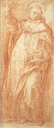
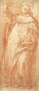

|  |
|---|
Textum Taurini 1951 editum
et automato translatum a Roberto Busa SJ in taenias magneticas
denuo recognovit Enrique Alarcón atque instruxit


|  |
|---|


[89320] Petrus de Alvernia, In Politic. continuatio, lib. 3 l. 7 n. 1 Postquam philosophus declaravit per quid distinguuntur popularis status et paucorum, in parte ista ostendit per quid antiqui istas politias determinaverunt. Et quia determinaverunt huiusmodi politias per iustum quoddam, ideo determinat in parte ista de iusto paucorum potentia, et multorum, et quomodo verum dixerunt, et quomodo non: et dividitur in partes duas. In prima praemittit intentum suum. Secundo prosequitur, ibi, omnes enim tangunt, et cetera. In prima dicit, quod postquam determinatum est, quid est paucorum status, et multorum, et quod distinguuntur per divitias et penuriam, primo accipiendum definitiones, quas antiqui assignaverunt de ipsis. Definiunt autem ista per iustum, quia politia est ordo inhabitantium in civitate, et iste ordo attenditur secundum aliquam iustitiam; ideo huiusmodi politias definiverunt per iustum: propter quod videndum est, quid sit iustum multorum.
[89321] Petrus de Alvernia, In Politic. continuatio, lib. 3 l. 7 n. 2 Deinde cum dicit omnes enim prosequitur intentum suum. Et quia antiqui, ut dictum est, istas politias distinxerunt per iustum, vult determinare, quod huiusmodi iustum sit iustum secundum quid, non simpliciter. Et primo ostendit, quod sit iustum secundum quid. Secundo specialiter, quod non sit iustum simpliciter, ibi, quod autem principalissimum, et cetera. Adhuc prima in duas: quoniam primo declarat, quod isti tetigerunt iustum secundum quid, non simpliciter. Secundo assignat causam cuiusdam dicti, ibi, causa autem, quia et cetera. In prima dicit, quod omnes antiqui determinantes de paucorum statu, et de multorum, tangunt iustum secundum quid, non simpliciter, procedentes usque ad aliquid: et dicunt non omne illud quod est proprie iustum et simpliciter iustum, sed illud quod est improprie et secundum quid iustum. Et hoc apparet, quia iustum attenditur secundum aliquam proportionem, et secundum aliquam dignitatem, saltem in iustitia distributiva. Et ideo ubi est iustum secundum proportionem, quae est secundum dignitatem, respectu boni simpliciter, ibi est bonum simpliciter: ubi autem non est respectu boni simpliciter, sed secundum quid, ibi iustum non est simpliciter, sed secundum quid. Hoc autem est in statu multorum, et paucorum. In statu enim paucorum attenditur iustum penes divitias, in statu vero multorum penes libertatem. Et manifestum est, quod ista non sunt bona simpliciter: bona enim simpliciter sunt bona virtutis: quare manifestum est, quod isti tetigerunt iustum secundum quid, non simpliciter. Iterum hoc apparet. Iustum enim aequale videtur esse vel consistere in quadam aequalitate secundum proportionem; quae non solum attenditur ex parte rerum, quae distribui debent, sed ex parte suppositorum, quibus debet fieri distributio. In iustitia enim facienda etiam attenditur aequalitas proportionis ex parte personarum, quibus debet fieri iustitia secundum aliquam dignitatem: et eamdem oportet esse proportionem rerum quae distribuuntur; ut si sint aequales secundum virtutes, aequaliter distribuatur eis de bonis. Si autem inaequales secundum virtutem, distribuatur eis aequaliter secundum proportionem, ut quanto excedit unus alium in virtute, tanto plus distribuatur ei de bonis communibus. Similiter etiam si quantum ad aliquid attendatur dignitas. Et antiqui decertantes de iusto paucorum potentiae et multorum, concesserunt bene aequalitatem ex parte rerum et tetigerunt; aequalitatem autem suppositorum praetermiserunt, et male quantum ad hoc iudicaverunt. Quare manifestum est, quod non tetigerunt iustum simpliciter; quare, male ipsum iudicaverunt.
[89322] Petrus de Alvernia, In Politic. continuatio, lib. 3 l. 7 n. 3 Deinde cum dicit causam autem assignat causam cuiusdam dicti. Dixit enim, quod male iudicaverunt de iusto, et assignat causam huiusmodi: et dividitur in duas, secundum quod dupliciter assignat. Secunda, ibi, deinde autem et cetera. In prima dicit, quod causa quare male iudicaverunt de iusto, non considerantes aequalitatem personarum sed rerum, haec fuit, quia de seipsis iudicaverunt: fere autem plures pravum iudicium dant de seipsis; et ratio huius est, quia ad iudicium requiritur prudentia. Prudentia autem praesupponit appetitum rectum per virtutem moralem: quod ergo pervertit appetitum, pervertit iudicium rationis. Iudicium autem de seipso pervertit appetitus malus et perversus. Homo autem habet ut in pluribus perversum appetitum respectu suiipsius, quia unusquisque nimis afficitur ad seipsum. Et ideo propter nimiam dilectionem et affectionem quam habet ad seipsum, voluntas pervertitur a fine recto: et ideo iudicantes de seipsis prave iudicant. Et dicit fere autem etc. quia sapientes non male iudicant de seipsis: habent enim prudentiam et appetitum rectum, et cognoscunt se sicut sunt, et ideo non inordinate afficiuntur ad seipsos; propter quod recte iudicant de seipsis sicut de aliis. Cum ergo iustum sit aequale eodem modo et ex parte rerum, et ex parte personarum, sicut dictum est in Ethicis, ipsi vero antiqui erant personae, quibus fiebat distributio, et iudicabant de seipsis: concesserunt aequalitatem ex parte rerum, non personarum: quare manifestum est, quod male iudicaverunt de iusto.
[89323] Petrus de Alvernia, In Politic. continuatio, lib. 3 l. 7 n. 4 Deinde cum dicit deinde autem hoc idem probat secunda ratione: et dicit, quod iterum manifestum est, quod hi qui favent statui paucorum et multorum, male iudicaverunt de iusto, et propter causam dictam, et quia tangentes iustum secundum quid, putaverunt tetigisse iustum simpliciter: sed non tetigerunt, quia dixerunt fautores status paucorum, quod si aliqui sunt inaequales secundum quid, sunt inaequales simpliciter: videlicet si sunt inaequales secundum divitias, ut unus sit ditior alio, sint inaequales simpliciter. Et ideo non tantum debet distribui de bonis communibus uni quantum alteri. Fautores status multorum dixerunt, quod si aliqui essent aequales in libertate, essent aequales simpliciter, et aequaliter debebant recipere de bonis communibus. Si autem inaequales in libertate, inaequales simpliciter et inaequaliter deberent recipere. Et sic manifestum est, quod non tangunt iustum simpliciter, sed secundum quid. Arguunt enim a secundum quid ad simpliciter: est aequalis secundum divitias, ergo aequalis: et: est aequalis in libertate, ergo aequalis simpliciter.
[89324] Petrus de Alvernia, In Politic. continuatio, lib. 3 l. 7 n. 5 Deinde cum dicit quod autem probat specialiter, quod isti non intenderunt iustum simpliciter. Et primo quantum ad statum paucorum. Secundo quantum ad omnes, ibi, neque iis, qui a principio et cetera. In prima dicit, quod isti dimittunt principalissimum iustum. Si enim ita esset, quod civitas esset instituta finaliter propter divitias et possessiones, et homines communicassent et convenissent propter eas, tantum participarent civitate quantum divitiis. Et tunc veritatem haberet sermo eorum, qui de statu paucorum scribunt, ut qui aequales essent in divitiis, aequaliter reciperent de communi: si vero non, non. Non enim videtur eis esse iustum, si communitas habeat in bonis centum talenta, quod tantum recipiat de centum talentis, qui ad commune non apposuit nisi unam minam, idest aliquam parvam mensuram, sicut ille qui totum residuum dedit. Iterum non videtur esse iustum, quod ille qui minus apposuit ad commune, tantum recipiat de illis quae habuit communitas a principio, nec de illis quae postmodum acquisita sunt. Nunc autem civitas non est instituta propter divitias finaliter, cum divitiae ad aliquid ordinentur: quare manifestum est, quod isti qui statui paucorum favent, non tetigerunt iustum simpliciter.
[89325] Petrus de Alvernia, In Politic. continuatio, lib. 3 l. 7 n. 6 Deinde cum dicit neque compugnationis ostendit universaliter, quod nec isti nec alii tetigerunt iustum simpliciter. Et quia iustum attenditur in ordine ad finem civitatis, in operationibus quae sunt ad alterum, ideo philosophus declarat finem civitatis, ut ex hoc appareat quid sit iustum simpliciter, et quid iustum secundum quid. Et dividitur in partes duas. Primo ostendit, gratia cuius finis civitas sit instituta. Secundo infert corollarium, ex quo apparet illud quod intendit principaliter, ibi, quapropter et cetera. Prima in duas. Primo ostendit, quod civitas non est instituta gratia alicuius boni particularis, et secundum quid. Secundo ostendit gratia cuius est instituta, ibi, sed ipsius bene vivere et cetera. Adhuc prima in duas. Primo ostendit, quod non est instituta gratia ipsius vivere absolute. Secundo, quod nec gratia commutationis, aut compugnationis, ibi, neque compugnationis gratia et cetera. In prima dicit, quod si civitas non sit instituta finaliter propter divitias, nec instituta est gratia ipsius vivere solum, ita quod ipsum vivere secundum se sit finis ultimus civitatis, sed magis ipsum vivere bene: si enim vivere absolute esset finis civitatis, quicquid attingeret ad vivere, attingeret ad finem civitatis: sed servi et bruta animalia attingunt ad vivere absolute, quare attingerent ad finem civitatis: sed non attingunt, quia felicitas, finis est civitatis: ipsa autem non participant felicitatem nec attingunt ad ipsum vivere secundum electionem: quare manifestum est, quod civitas non est instituta gratia ipsius vivere absolute.
[89326] Petrus de Alvernia, In Politic. continuatio, lib. 3 l. 7 n. 7 Deinde cum dicit neque compugnationis ostendit, quod nec gratia compugnationis, et commutationis eorum adinvicem. Et dividitur in duas, secundum quod hoc dupliciter probat. Secunda, ibi, quod autem hoc modo et cetera. Adhuc prima in duas. In prima ponit conclusionem rationis quam intendit. In secunda probat eam, ibi, etenim utique Tyrrheni et cetera. In prima dicit quod civitas non est instituta gratia compugnationis ad inimicos, ut a nullo possint pati iniustitiam; nec gratia commutationis faciendae; nec propter aliquos contractus, vel usus, qui possunt fieri inter homines adinvicem.
[89327] Petrus de Alvernia, In Politic. continuatio, lib. 3 l. 7 n. 8 Deinde cum dicit etenim utique probat; et dicit quod si civitas esset instituta propter ista, quae dicta sunt, tunc Tusci et Carthaginenses, qui habent aliquos contractus adinvicem, essent sub una civitate: sed hoc est falsum: quare civitas non est instituta gratia alicuius commutationis, nec compugnationis. Circa istam rationem sic procedit. Primo probat consequentiam. Secundo destruit consequens, ibi, sed neque magistratus. In prima dicit, quod si civitas esset instituta, gratia compugnationis et commutationis et contractuum, qui possunt fieri adinvicem, tunc Tusci et Carthaginenses, et omnes inter quos sunt et fiunt aliqui contractus, essent sub una civitate: sunt enim istis pacta de introductibilibus, sive de rebus apportabilibus adinvicem, ut res unius civitatis possint apportari ad aliam civitatem, et commutari. Iterum conventiones habent, quod non faciant sibi adinvicem iniustitiam de compugnatione: quare isti essent sub una civitate contra inimicos iuvando se adinvicem.
[89328] Petrus de Alvernia, In Politic. continuatio, lib. 3 l. 7 n. 9 Deinde cum dicit sed neque destruit consequens, probando ipsum esse falsum. Et dividitur in duas, secundum quod dupliciter probat. Secunda ibi, neque quales quosdam et cetera. In prima dicit, quod manifestum est, quod non sit una civitas, quia civitas una unum principatum habet: sed cives Tusci, et Carthaginenses, et alii quibus sunt contractus adinvicem, non sunt sub uno principatu, sed sub diversis principatibus. Alius est enim principatus Tuscorum, et Carthaginensium: quare, manifestum est, quod isti non sunt sub una civitate.
[89329] Petrus de Alvernia, In Politic. continuatio, lib. 3 l. 7 n. 10 Deinde cum dicit neque quales ponit secundam rationem ad destruendum consequens. Et dicit quod manifestum est quod isti non sunt sub una civitate, quia isti Tusci non curant quales debent esse secundum virtutem Carthaginenses, nec e converso; nec curant quomodo nullus eorum iniustus sit, nec qualiter nullus habeat malitiam, nec ad hoc laborant, nec ad hoc cooperantur; sed solum intendunt quod non faciant sibi adinvicem iniustitiam. Sed quicumque curant de bona legislatione considerant de virtute et malitia, ut malitiam repellant a civibus et faciant eos virtuosos: hoc enim intendit bonus legislator: quare manifestum est quod bona et vera civitas et non secundum sermonem tantum, debet esse sollicita de virtute, ut faciat cives virtuosos. Quamvis tamen isti non curent adinvicem quales sint secundum virtutem, nec ad hoc laborent, habent tamen aliquam communicationem; nam iuvant se in pugnando contra inimicos, et communicant in commutationibus et in contractibus, et sic de aliis. Similiter dicendum est ita, quod si sint duae civitates remotae secundum situm, quandoque tamen in commutationibus et aliis contractibus communicant et iuvant se adinvicem in compugnando contra inimicos, differentes tantum in hoc a propinquis secundum locum, quia istae propinquae, illae remotae. Et pactum est eis lex, quod non faciant sibi adinvicem iniustitiam non quod faciant se bonos cives: sicut proverbialiter dixit Lycophron sophista quod pactum inter aliquos habitum fideiussor est, quod non faciant sibi adinvicem iniustitiam; non quod bonos seinvicem faciant, nec et quales sint secundum virtutem, scilicet boni vel iusti.
[89330] Petrus de Alvernia, In Politic. continuatio, lib. 3 l. 7 n. 11 Deinde cum dicit quod autem ponit secundam rationem ad probandum quod civitas non est instituta gratia compugnationis et commutationis et aliorum contractuum. Posset enim aliquis dicere quod si Tusci et Carthaginenses essent propinqui et commorarentur simul in uno loco et communicarent in communicationibus et contractibus aliis, essent una civitas. Hoc removet per istam rationem. Et dividitur in duas. In prima ponit rationem quasi procedens narrative. Secundo concludit conclusionem principaliter intentam, ibi, ex quo patet et cetera. In prima dicit, palam esse ex dictis, quod hoc modo se habeat, sicut dictum est, quod civitas non instituta sit gratia compugnationis, nec commutationis, nec aliorum contractuum. Si enim duae civitates distinctae, sicut Megarensium et Corinthiorum, essent propinquae secundum situm, ita quod se tangerent et circumvolverentur uno muro, adhuc non esset una civitas, quia posset contingere quod haberent diversos principatus et diversas politias, et manifestum est quod tunc non esset una civitas, etiam dato quod communicarent sibi adinvicem secundum connubia, ut aliqui civium Megarensium contraherent cum aliquibus Corinthiorum; quamvis ista communicatio sit una de propriis communicationibus quae fiunt in civitatibus. Homines enim unius civitatis frequenter contrahunt cum aliis eiusdem civitatis. Adhuc tamen non esset una civitas, quia istud possent facere diversae civitates. Eodem modo si aliqui separati essent secundum locum et haberent diversas habitationes, non tamen tantum distarent quod non possent adinvicem communicare, sed haberent leges quod in commutationibus faciendis adinvicem non inferrent iniuste sibi molestias, ut si aliquis esset faber, alius coriarius, alius agricola, alius haberet aliquam artem aliam, et essent in aliqua magna multitudine, sicut si essent decem millia, et in nullo alio communicarent adinvicem, quam in commutatione rerum et in compugnando contra inimicos, adhuc non esset una civitas; quia ista possunt contingere habitantibus in diversis civitatibus. Quae igitur est causa propter quam non est civitas una? Non est dicendum quod propter hoc non sunt propinquae secundum situm cum non sint sub una civitate, ita quod non esse propinquos secundum situm faciat civitatem non esse unam et esse propinquum faciat civitatem esse unam: quia si aliqui sic convenirent quod essent propinqui secundum situm et communicarent adinvicem, si tamen quilibet haberet domum suam et uteretur ea sicut civitate, quae communis est pluribus, et iuvarent se adinvicem contra inimicos iniuriantes eis, sed in nullo alio communicarent, non esset civitas una. Et hoc manifestum est diligenter consideranti; quia possibile est quod sint sub diversis principatibus et politiis, et tunc manifestum est quod non sunt sub una civitate. Iterum dato quod sic essent congregati, ut adinvicem colloquerentur et divisim de contractibus faciendis, adhuc non esset civitas una, quia possibile esset quod haberent diversas politias et principatus.
[89331] Petrus de Alvernia, In Politic. continuatio, lib. 3 l. 7 n. 12 Deinde cum dicit manifestum igitur concludit conclusionem principalem. Et dicit quod manifestum est quod civitas non est communicatio loci, nec civitas finaliter instituta est ut adinvicem non faciant iniusta, nec gratia commutationis: tamen si debeat esse civitas: oportet ista existere, aliter enim non esset civitas: tamen istis solum existentibus non est primo.
[89332] Petrus de Alvernia, In Politic. continuatio, lib. 3 l. 7 n. 13 Deinde cum dicit sed ipsius ostendit gratia cuius instituta est. Et dividitur in duas. In prima ostendit quid est civitas simpliciter. In secunda ostendit quis est finis civitatis gratia cuius instituta est, ibi, finis est et cetera. In prima dicit quod bene dictum est quod communicatio loci non est civitas, sed communicatio bene vivendi composita ex domibus et diversis generibus gratia vitae perfectae, et per se sufficientis, est civitas. Et per hoc quod dicit, communicatio bene vivendi, innuit causam formalem: per hoc quod dicit composita ex domibus, tangit causam materialem propinquam: per hoc quod dicit ex diversis generibus, tangit causas materiales remotas: per hoc quod dicit gratia vitae perfectae etc. tangit causam finalem. Sed haec non contingunt esse nisi habitantibus eumdem locum et nisi coniungantur secundum connubia. Et propter hoc in civitate fiunt affectiones amicitiae factivae et conservativae, et confraternitates, quae sunt communicationes adinvicem in comestionibus et potibus vel in aliis. Similiter fiunt sacra et conversationes et solatia propter ipsum convivere: et ratio huius est, quia amicitia multum necessaria est in civitate. Amicitia enim eligitur propter convivere, sine autem convivere non est civitas: quare amicitia necessaria est ad civitatem: sed ista quae dicta sunt, necessaria sunt ad amicitiam; et ideo ista ordinata sunt in civitate.
[89333] Petrus de Alvernia, In Politic. continuatio, lib. 3 l. 7 n. 14 Deinde cum dicit finis quidem ostendit gratia cuius finis instituta est civitas. Et dicit quod finis civitatis propter quod civitas instituta est, est ipsum bene vivere. Civitas autem et illa quae ordinantur ad civitatem, sunt propter finem. Civitas enim est communicatio bene vivendi composita ex generibus diversis et gratia vitae perfectae et per se sufficientis. Hoc autem est vivere feliciter: bene autem vel feliciter vivere in politicis, est operari secundum optimam virtutem practice. Et propter hoc manifestum est quod communicatio politica consistit in communicatione bonarum actionum, et consistit in ipso vivere absolute. Apparet igitur quod finis propter quem instituta est civitas bene ordinata, est secundum virtutem perfectam vivere vel operari, et non ipsum convivere.
[89334] Petrus de Alvernia, In Politic. continuatio, lib. 3 l. 7 n. 15 Deinde cum dicit propter quod infert corollarium ex quo apparet principale intentum. Et dicit quod, cum finis civitatis sit feliciter vivere practice, feliciter autem vivere sit operari secundum optimam virtutem practicam, quae est prudentia, et communicatio politica consistit in huiusmodi actionibus; manifestum est quod illi qui plus addunt ad talem communionem plus addunt ad civilitatem, et plus civitatis pertinet ad istos quam ad illos qui sunt aequales in libertate vel genere, et quam ad illos qui sunt maiores in genere, tamen minores et inaequales secundum virtutem politicam. Iterum plus attinet illis de eis quae pertinent ad civitatem, quam illis qui excedunt alios in divitiis, sed exceduntur ab aliis in virtutibus. Ex quo apparet, quod si iustum est aequale aliquarum rerum aliquibus personis secundum dignitatem in ordine ad finem, quod in politia illa in qua ponitur rectus finis, est iustum simpliciter. Iustum enim, ut dictum est, attenditur secundum dignitatem in ordine ad finem, sicut in regno et politiis rectis universaliter. In politia autem in qua ponitur finis non rectus, non est iustum simpliciter. Tales autem sunt status popularis et paucorum; et ideo in talibus non est iustum simpliciter. Quod erat principale intentum, gratia cuius induxit totam inquisitionem de fine civitatis. Nunc recapitulat, et dicit quod manifestum est ex determinatis, quod omnes illi qui adversantur de iusto non tetigerunt iustum simpliciter, sed iustum secundum quid tantum.
[89335] Petrus de Alvernia, In Politic. continuatio, lib. 3 l. 8 n. 1 Postquam philosophus distinxit politias secundum distinctionem principatuum, et declaravit cuius gratia civitas est instituta, in parte ista inquirit quem oportet esse principantem in civitate. Et quia principatus debet distribui secundum excessum alicuius boni, inquirit secundum cuius excessum debeant distribui. Et secundum hoc dividitur ista pars in duas partes. In prima inquirit quem oportet esse principantem in civitate. Secundo inquirit secundum cuius excessum debeat distribui, ibi, quoniam autem et cetera. Prima in duas. In prima movet dubitationem, tangens quasi solutionem. Secundo arguit contra solutionem, ibi, sed haec et cetera. In prima dicit quod postquam determinatum est ad quod politiae debent distingui secundum distinctionem principatuum, sequitur dubitatio, scilicet quem oportet dominantem esse in civitate. Cum autem oporteat aliquem esse dominantem: aut dominabitur multitudo, sicut in politia quae est status popularis; aut divites ut in statu paucorum; aut virtuosi, sicut in statu optimatum; aut unus optimus, sicut in regno; aut unus pessimus, sicut in tyrannide.
[89336] Petrus de Alvernia, In Politic. continuatio, lib. 3 l. 8 n. 2 Deinde cum dicit sed haec omnia arguit contra ista singula, et ad minus contra plura. Et dividitur in duas. In prima facit quod dictum est. Secundo specialiter inquirit, utrum magis expediat multitudinem dominari aut paucos virtuosos, ibi, de his et cetera. Prima adhuc in duas. Primo arguit quod non expedit dominari multitudinem, aut divites. Secundo quod nec unum studiosum, ibi, sed unum et cetera. Adhuc prima in duas. Primo ostendit quod non expedit multitudinem dominari. Secundo, quod nec paucos divites, ibi, ergo ne pauciores et cetera. Prima in tres, secundum quod probat per tres rationes quod non expedit multitudinem dominari. Secunda, ibi, rursumque et cetera. Tertia, ibi, adhuc et actiones et cetera. In prima dicit quod omnia ista videntur habere difficultatem. Si enim dicatur quod expedit multitudinem pauperum dominari, cum huiusmodi multitudo potentiam habeat et sine virtute, sic sequetur quod diripient propter indigentiam et potentiam bona divitum. Sed est ne hoc iniustum? Quasi diceret, sic. Secundum enim virtutem civitas debet habere dominium iustum. Quare manifestum est quod iniustitia extrema est haec, idest pessima.
[89337] Petrus de Alvernia, In Politic. continuatio, lib. 3 l. 8 n. 3 Deinde cum dicit rursumque omnibus ponit secundam rationem. Et dicit quod, si dicatur quod expedit multitudinem dominari, sequetur sicut prius, quod diripient bona divitum et paucorum, sicut virtuosorum. Sed hoc est destruere civitatem. Sed virtus non destruit illud cuius est, quod habet eam, nec quod iustum est corrumpit civitatem: quare manifestum est quod illa lex quae praecipit multitudinem dominari, non est iusta: non igitur expedit multitudinem dominari.
[89338] Petrus de Alvernia, In Politic. continuatio, lib. 3 l. 8 n. 4 Deinde cum dicit adhuc et ponit tertiam rationem. Et dicit quod omnes operationes, quas facit tyrannus, ut tyrannus est, iniustae sunt, quia tyrannus per potentiam suam violentiam facit et accipit bona subditorum: talis autem operatio iniusta est. Sed ubi multitudo dominatur, facit violentiam divitibus ad modum tyranni diripiendo bona eorum; et ideo manifestum est quod multitudo est sicut tyrannus: quare operationes multitudinis sunt iniustae, ergo non expedit multitudinem dominari.
[89339] Petrus de Alvernia, In Politic. continuatio, lib. 3 l. 8 n. 5 Deinde cum dicit ergo ne ostendit quod non est iustum dominari paucos divites. Et dividitur in duas. In prima ostendit quod non expedit paucos divites dominari. Secundo quod nec virtuosos, sive paucos sive plures, ibi, sed epiiches et cetera. In prima dicit quasi interrogando: est ne iustum pauciores divites dominari in civitate? Quasi dicat: non est iustum pauciores dominari, quia per potentiam suam diripient bona pauperum et possessiones; sicut e contrario multitudo si dominaretur; et sic iustum esset divites diripere bona multitudinis et e contrario iustum esset multitudinem diripere bona divitum. Sed hoc est iniustum, ut visum est: quare manifestum est quod pravum et iniustum est et non studiosum divites paucos dominari.
[89340] Petrus de Alvernia, In Politic. continuatio, lib. 3 l. 8 n. 6 Deinde cum dicit sed epiiches ostendit quod non est iustum dominari virtuosos, sive plures, sive paucos. Aliquis enim diceret quod verum est quod non expedit dominari nec paucos divites, nec multitudinem; sed bene expedit et iustum est virtuosos dominari et esse dominos inter omnes. Sed istud videtur esse falsum: quia si soli virtuosi principentur, omnes alii erunt inhonorati, quia non attingunt ad honorem principatus, quia principatus honores sunt. Sunt enim praemium virtutis, et hoc est honor, sicut dicitur primo et quarto Ethicorum. Ergo qui non attingit ad principatum, non attingit ad honorem. Principantibus igitur virtuosis alii remanent inhonorati: sed hoc est inconveniens. Est enim hoc causa dissensionis: omnes enim appetunt honorem naturaliter, propter quod appetunt honorari a bonis et sapientibus qui melius et rectius possent iudicare. Si ergo auferatur eis honor, sequitur dissensio et multa mala in civitate: quare non est iustum virtuosos dominari.
[89341] Petrus de Alvernia, In Politic. continuatio, lib. 3 l. 8 n. 7 Deinde cum dicit sed unum ostendit quod non est iustum dominari unum virtuosum. Et dividitur in partes duas. In prima facit quod dictum est. In secunda, quia posset aliquis dicere quod non expedit hominem principari, sed hominem per legem ostendit contrarium, ibi, sed forte dicet et cetera. In prima dicit quod non expedit unum virtuosum valde principari; quia si unus valde virtuosus dominetur, plures erunt inhonorati honore principatus: sed hoc est inconveniens. Ex hoc enim sequuntur dissensiones in civitate et perturbationes, sicut dictum est. Iterum videbitur politia peior esse quam status paucorum, quia in principatu paucorum pluribus impenduntur, in ista autem uni. Hoc autem peius videtur esse, quia malum quanto magis divisum est, tanto minus existit et tolerabilius est: quare manifestum est quod non expedit unum virtuosum dominari.
[89342] Petrus de Alvernia, In Politic. continuatio, lib. 3 l. 8 n. 8 Deinde cum dicit sed forte quia diceret aliquis, quod lex debet dominari non homo, arguit contra hoc. Et primo ponit rationem per quam videtur quod lex debet dominari. Secundo arguit in contrarium, ibi, si igitur et cetera. In prima dicit quod pravum et iniustum est hominem principari et non legem, quia homo habet passiones sibi coniunctas. Passiones autem distrahunt voluntatem et faciunt deviare a recto fine, et per consequens pervertunt iudicium rationis. Lex autem nullas habet passiones: quare per legem non contingit deviare e recto iudicio rationis. Cum igitur melius et iustius sit illum principari qui non potest deviare a recto fine, quam illum qui potest, et homo potest deviare a recto fine, lex vero non; manifestum est quod iustum est legem dominari, non hominem.
[89343] Petrus de Alvernia, In Politic. continuatio, lib. 3 l. 8 n. 9 Deinde cum dicit si igitur arguit in contrarium; et dicit quod non videtur esse verum quod legem sit iustum dominari universaliter; quia contingit leges esse pertinentes ad potentiam paucorum vel multorum; et tales leges datae et ordinatae sunt in ordine ad finem illarum. In illis autem non supponitur rectus finis simpliciter, sicut praedictum est: ergo nec leges istae sunt iustae simpliciter. Quare manifestum est quod non differt quid dicatur, sive legem, sive aliud aliquid aliorum principari; quia semper idem accidit inconveniens, sicut prius ostensum est de omnibus.
[89344] Petrus de Alvernia, In Politic. continuatio, lib. 3 l. 8 n. 10 Deinde cum dicit de aliis omissis aliis, specialiter descendit ad inquirendum utrum magis expediat multitudinem, aut paucos virtuosos dominari. Et dividitur in duas. In prima praemittit quod omissis aliis, de quibus non est argutum, quia altera ratio est (manifestum est enim quod unum pessimum non expedit dominari, quia hoc est per se manifestum), altera ratio de hoc et de aliis, quia de aliis est dubium, sed de hoc non; ideo philosophus non arguit ad istud. Sed inquirendum est, utrum multitudinem magis expediat dominari, quam virtuosos, paucos tamen. Hoc enim videtur habere dubium et solutionem qua dissolvitur ratio, quae in oppositum adducebatur prius; et magis videtur esse verum et expediens multitudinem principari debere quam paucos virtuosos.
[89345] Petrus de Alvernia, In Politic. continuatio, lib. 3 l. 8 n. 11 Deinde cum dicit multos enim prosequitur; et primo ostendit quod magis expediat multitudinem dominari quam paucos virtuosos. Secundo solvit dubitationem, et quamdam aliam annexam illi, ibi, quapropter et cetera. Prima in duas. Primo declarat unam propositionem. Secundo arguit ex illa, ibi, si igitur et cetera. Adhuc prima in duas. Primo manifestat illam propositionem. Secundo ponit differentiam inter aliqua de quibus erat mentio facta, ibi, multos enim et cetera. In prima dicit, quod si sint multi non virtuosi simpliciter, cum convenient in aliquod unum, facient unum aliquod studiosum, non sic quidem, ut quilibet faciat aliquid studiosum per se, et aliquid melius, sed omnes simul faciant unum aliquid studiosum, et sunt aliquid melius quam quilibet divisim acceptus. Et hoc declaravit per simile; et dicit, quod sicut illi qui faciunt coenam ad communes expensas et quilibet modicum apportat, quod autem collectum est ex omnibus apportatis magnae quantitatis est, sic est in proposito, si sint multi et quilibet aliquid habeat virtutis et prudentiae, cum convenerint in unum facient unum aliquid magnum et virtuosum. In quo enim unus deficit, contingit alterum abundare; ut si unus non inclinetur ad fortitudinem alter inclinabitur; et si alius non inclinetur ad temperantiam, alter inclinabitur: et ubi unus non poterit praevidere bene, alter poterit: et sic cum convenerit, facient quasi unum hominem virtuosum et perfectum: hominem dico habentem multitudinem sensuum, per quos discernere possit, et multitudinem manuum et pedum per quae possit moveri ad operationem et operari. Similiter etiam quantum ad mores et quantum ad intellectum se habet. Ex omnibus enim, cum convenerint, efficietur quasi unus homo perfectus secundum intellectum, quantum ad virtutes intellectuales, et secundum appetitum quantum ad morales. Et adducit aliud simile: dicens, quod propter hoc quod multi sunt aliquid melius simul iuncti, quam quilibet illorum, contingit quod opera musicalia, et opera poetarum melius facta sunt et ducta ad perfectionem per plures quam per unum. Sic enim inventae fuerunt artes et scientiae; quia primo unus invenit aliquid et illud tradidit et forte inordinate: alius post hoc accepit illud et addidit et totum tradidit et magis ordinate; et sic consequenter donec perfecte artes et scientiae inventae sunt: et manifestum est quod aliqui aliqua invenerunt, sed omnes simul omnia: et manifestum est quod plus est et perfectius illud quod omnes invenerunt quam illud quod quilibet per se.
[89346] Petrus de Alvernia, In Politic. continuatio, lib. 3 l. 8 n. 12 Deinde cum dicit sed hoc differunt ponit differentiam inter unum virum studiosum simpliciter, et quemlibet illorum, ex quibus cum convenerint in unum, factum est aliquid studiosum. Et dicit quod viri studiosi, sive virtuosi, differunt a quolibet illorum multorum ex quibus cum convenerint in aliquod unum, fit aliquid virtuosum, sicut bonus differt a non bono; quoniam viri virtuosi boni simpliciter sunt; sed quilibet istorum secundum se acceptus non est bonus, quia non est virtuosus perfecte. Iterum differunt viri studiosi ab istis divisim acceptis, sicut picta per artem differunt a veris. Circa quod intelligo quod pictor volens aliquid pingere per artem, sicut imaginem hominis, considerat bonam dispositionem oculorum in isto dimittens malas dispositiones aliorum membrorum; similiter considerat bonam dispositionem manus in alio dimittens malas dispositiones aliorum membrorum; et sic considerat meliores dispositiones aliorum membrorum in diversis et dimittit turpes: tunc ex omnibus istis collectis facit imaginem pulchriorem quam sit quilibet illorum ex quibus aliquid accepit. Et manifestum est quod quilibet illorum ex quibus aliquid accepit aliquid pulchritudinis habet, sed non simpliciter; illud autem quod acceptum est ex istis, simpliciter pulchrum est. Sic similiter in proposito, quilibet istorum multorum aliquid habet virtutis, sed non est simpliciter virtuosus: id autem quod simpliciter collectum est ex ipsis, simpliciter virtuosum est. Et hoc est quod intendit, cum dicit artificiose, eo quod illa vera simpliciter accepta sunt collecta in unum, et imago illa quae componitur simul ex partibus bene dispositis in diversis existentibus, pulchrior est quam unumquodque illorum, in quorum uno invenitur pulcher oculus, in alio autem pulchra manus: convenit enim bene invenire seorsum unum habentem oculum pulchriorem quam sit pictus quamvis in aliis deficiat; similiter aliquem habentem pulchram manum, quam sit picta, quamvis in aliis deficiat; similiter in aliis particulis. Similiter in proposito, differt vir studiosus ab unoquoque illorum qui dicti sunt; quia omnes bonas dispositiones secundum animam habent coniunctim, et in uno supposito unusquisque illorum unam aut in qua forte poterit excedere virtuosum, simpliciter tamen excedetur ab eo.
[89347] Petrus de Alvernia, In Politic. continuatio, lib. 3 l. 8 n. 13 Deinde cum dicit siquidem igitur ex ista propositione declarata arguit dicens, quod immanifestum est utrum huiusmodi differentiam contingat esse circa multitudinem, et circa populum totum ad paucos virtuosos, quod scilicet tota multitudo melior sit quam illi pauci virtuosi. Tamen secundum virtutem in quibusdam est impossibile: hoc est enim quaedam multitudo bestialis, cuius homines inclinantur ad actus bestiales, et parum rationis habent. Et in tali multitudine non est verum, quod ex illis hominibus possit fieri aliquid virtuosum, si conveniant in unum. Alia est multitudo in qua quisque habet aliquid virtutis et prudentiae, et inclinantur ad actum virtutis: et in tali verum est, quod illud quod fit ex istis, cum conveniunt in unum, est aliquid virtuosum. Et hoc est quod dicit philosophus quod in aliqua multitudine non est verum, quod illa multitudo faciat aliquid virtuosum, sed in aliqua multitudine potest habere veritatem. Ex quo potest formari ratio sic. Melius est principari quod melius et studiosius est; sed contingit aliquam multitudinem esse meliorem et magis studiosam paucis virtuosis, ut probatum est, ergo et cetera.
[89348] Petrus de Alvernia, In Politic. continuatio, lib. 3 l. 9 n. 1 Postquam philosophus movit dubitationem, utrum magis expediat multitudinem dominari quam virtuosos, in parte ista solvit eam, et quamdam annexam illi: et habet duo. Primo infert solutionem quaestionis ex determinatis, et ponit quaestionem annexam. Secundo solvit illam, ibi, participare et cetera. In prima dicit, quod propter ea quae dicta sunt, potest solvi dubitatio, qua quaeritur: utrum magis expediat dominari multitudinem, quam paucos virtuosos: apparet enim ex dictis, quod duplex est multitudo. Una quidem bestialis, in qua nullus habet rationem vel modicam, sed inclinatur ad bestiales actus; et manifestum est, quod istam non expediat dominari aliquo modo, quia sine ratione est et coniunctim et divisim. Alia est multitudo ubi omnes aliquid habent rationis et inclinantur ad prudentiam, et bene suasibiles sunt a ratione: et talem expedit magis dominari, quam paucos virtuosos: quamvis enim quilibet non sit virtuosus, tamen quod fit ex omnibus cum conveniunt, est virtuosum. Et sic apparet solutio quaestionis; quia ubi est talis multitudo, expedit eam magis dominari quam virtuosos: ubi non est talis, sed bestialis, nullo modo expedit. Poterit etiam per hoc solvi quaestio alia consequenter se habens ad illam; scilicet utrum oporteat multitudinem et liberos dominos eligere, et eos corrigere, et quorum expedit eos esse dominos, si expediat. Et qui sunt illi, de quibus movet quaestionem, exponit: huiusmodi enim sunt qui non habent aliquam dignitatem sive bonum virtutis.
[89349] Petrus de Alvernia, In Politic. continuatio, lib. 3 l. 9 n. 2 Deinde cum dicit participare quidem solvit quaestionem. Et primo solvit eam. Secundo solutionem confirmat per leges antiquorum, ibi, quapropter et cetera. Prima in tres. In primo ostendit quod inconveniens et non securum est multitudinem principari. Secundo, quod terribile est eos nullo modo participare principatum, ibi, non tradere. Tertio, quod expedit aliquo modo, ibi, restat utique et cetera. In prima dicit, quod liberos et multitudinem attingere ad principatum, maximum et primum periculum est: isti enim iniustitiam et imprudentiam habent, et propter imprudentiam deficerent a recte iudicando, et propter iniustitiam inclinabuntur ad opera iniusta: et ideo sequetur quod multa mala facient quantum ad seipsos, et multa iniusta quantum ad alios, eis iniuriando et molestando: hoc autem est periculosum; ergo tales participare principatu inconveniens est maximum.
[89350] Petrus de Alvernia, In Politic. continuatio, lib. 3 l. 9 n. 3 Deinde cum dicit non tradere ostendit, quod terribile videtur esse, eos nullo modo participare honoribus: et quod si nullo modo concedatur eis principatus, nec attingant ad ipsum, inconveniens et terribile videtur, quia reputabunt se inhonoratos; et cum sint multi et pauperes, sequetur seditio et turbatio in civitate: sed istud est terribile.
[89351] Petrus de Alvernia, In Politic. continuatio, lib. 3 l. 9 n. 4 Deinde cum dicit restat utique concludit tertium. Et dicit quod ex quo sequuntur multa mala in civitate, si nullo modo attingant ad principatum, relinquitur, quod participare debent principatu aliquo modo, saltem quantum ad consiliativum et iudicativum.
[89352] Petrus de Alvernia, In Politic. continuatio, lib. 3 l. 9 n. 5 Deinde cum dicit propter quod confirmat solutionem per leges et ordinationes antiquorum; et dividitur in partes duas. In prima facit quod dictum est. In secunda arguit contra ordinationes illorum, ibi habet autem ordinatio et cetera. In prima dicit, quod quia dictum est, si multitudo nullo modo participet principatu, sequentur multa mala, sicut seditio et turbatio in civitate. Solon legislator Atheniensium, et quidam alii legislatores statuerunt multitudinem in eligendo et corrigendo principes; tamen noluerunt quod quilibet sigillatim haberet potestatem in eligendo et corrigendo; et hoc rationabiliter; quia quilibet secundum se virtutem non habet: et ideo deficeret in eligendo et corrigendo. Et dicimus, quod isti noluerunt quod quilibet haberet potestatem in eligendo et corrigendo principantem propter causam dictam, sed omnes insimul. Et ratio huius est, quia quamvis quilibet non habeat virtutem perfectam, unde recte se possit habere in principatu, tamen tota multitudo sufficienter virtutem habet, et discretionem in eligendo et corrigendo: in ista enim multitudine sunt sapientes et virtuosi aliqui, et aliqui non; et plus valet quod sumantur isti omnes simul, quam si sumerentur virtuosi et sapientes solum: sic enim est hic, sicut est de alimento: alimentum enim impurum sumptum cum puro, plus proficit quam alimentum impurum, si per se assumatur: impuri enim alimenti malitia et improbitas per purum sibi permixtum corrigitur, et ex eis commixtis fit bonum alimentum, et impurum ad aequalitatem redigitur: sic in republica insipientes in consulendo et decernendo quodammodo rectificantur a sapientibus, ut possint aliquo modo reipublicae prodesse.
[89353] Petrus de Alvernia, In Politic. continuatio, lib. 3 l. 9 n. 6 Deinde cum dicit habet autem obiicit contra istam ordinationem antiquorum: et dividitur in duas secundum quod dupliciter obiicit. Secunda, ibi, alia autem est habita et cetera. Prima in duas. In prima tangit obiectionem. Secundo solvit, ibi, sed forte et cetera. Adhuc prima in duas. Primo praemittit duas propositiones. Secundo arguit ex illis, ibi, quare secundum et cetera. Prima in duas, secundum quod duas propositiones proponit. Secunda, ibi, deinde circa electionem et cetera. In prima dicit: ita dictum est quod Solon et quidam alii legislatores ordinaverunt, quod multitudo haberet potestatem in eligendo, et corrigendo principatum. Videtur quod haec ordinatio habet dubitationem. Et ad declarationem praemittit istam propositionem. Cuius est aliquem medicari et sanare ab aegritudine praesente, eius est iudicare quis recte sanatus est: hoc autem facit medicus. Et ratio propositionis est, quia cuius est aliquid facere per deductionem ex causis et principiis, eius est resolvere ipsum usque ad primas causas, considerando ex quibus et qualibus causis est et habet esse: hoc autem est iudicare; ergo eiusdem est aliquid constituere, et iudicare de ipso: similiter est in aliis artibus: sicut enim medicus in medicinalibus iudicat et corrigit, similiter et alii in suis artibus. Ulterius dicit quod medicus triplex est: unus quidem est qui non novit artem, sed ordinata ab aliis aliqualiter scit applicare ad opus. Alius est artifex principalis, qui novit simpliciter omnes causas et principia medicinae; et tertius est expertus qui aliqua novit, sed non simpliciter. Cum igitur dicimus medicum iudicare de eo quem sanat, intelligimus de medico secundo et tertio modo. Et sicut circa medicinam est considerare triplicem medicum, scilicet practicum, scientem et expertum, sic circa omnes alias artes fere: in omnibus autem ipsis iudicium rectum, de his quae sub ipsis sunt, attribuimus non minus, idest parum minus expertis quam ipsis scientibus. Dicit autem non minus, quia scientes simpliciter in omnibus melius iudicant.
[89354] Petrus de Alvernia, In Politic. continuatio, lib. 3 l. 9 n. 7 Deinde cum dicit deinde circa proponit secundam propositionem; et dicit, quod sicut est circa iudicium, sic est circa electionem, quod scientis est recte eligere, et hoc est opus eius, sicut geometra iudicat recte de geometricis, et gubernator de gubernativis, et sic de aliis. Et ratio huius est. Electio enim est appetitus praeconsiliantis, consilium autem est ratiocinatio de eis quae sunt ad finem, ratiocinari autem recte de his quae sunt ad finem scientis est. Quare manifestum est, quod opus scientis est iudicare, et recte eligere. Et si idiotae aliqua recte eligant, non tamen sicut scientes, nec magis ipsis; quia si recte eligant, vel iudicent, hoc est a casu; non sic autem sapientes.
[89355] Petrus de Alvernia, In Politic. continuatio, lib. 3 l. 9 n. 8 Deinde cum dicit quare secundum ex istis duobus arguit, quod non expedit populum habere potestatem in eligendo et corrigendo principatum; dicens, quod manifestum est ex dictis, quod non expedit multitudinem habere dominium in electione et correctione principum, quia sicut dictum est, scientis est eligere, et corrigere prudentis; sed multitudo et ignorans et imprudens est; quare non expedit multitudinem dominari in eligendo et corrigendo.
[89356] Petrus de Alvernia, In Politic. continuatio, lib. 3 l. 9 n. 9 Deinde cum dicit sed forte solvit istam dubitationem: et dividitur in duas, secundum quod dupliciter removet ipsam. Secunda ibi, et quia de quibusdam et cetera. In prima dicit, quod forte omnia ista non habent veritatem, nec bene dicta sunt; et hoc propter rationem superius dictam. Si enim sit multitudo non vilis, sive bestialis, sed aliquid habens rationis et virtutis, bene etiam suasibilis, habens sapientes a quibus recte suadeatur, talem multitudinem simul sumptam bene expedit habere potestatem in eligendo et corrigendo principem, et si unusquisque illorum non habeat sufficienter rationem et virtutem, per quam possit recte eligere et corrigere, tamen omnes simul habent, et constitutum ex omnibus cum conveniunt, virtuosum est simpliciter. Ex quo apparet, quod philosophus respondet per interemptionem minoris cum dicebatur quod multitudo est imprudens et ignorans: verum est si fuerit talis, sicut dictum est. Et dicit forsan quia in aliqua politia non expedit multitudinem habere potestatem in eligendo et corrigendo, sicut in regno. In regno enim si unus sit simpliciter prudens et alii regantur quasi dominativo principatu, ut inferiores obediunt superiori, non expedit multitudinem habere potestatem; sed in politia, ubi multitudo est aequalis expedit.
[89357] Petrus de Alvernia, In Politic. continuatio, lib. 3 l. 9 n. 10 Deinde cum dicit et quia de secundo removet obiectionem quasi interimendo maiorem; et dicit quod istud quod accipiebatur quod scientis solum secundum unamquamque artem est iudicare de opere suo, non habet veritatem, puta si sint aliqui qui fecerunt aliqua opera, et tamen non utantur illis, non est verum quod illi bene iudicent; sed illi qui utuntur recte iudicant; sicut non solum aedificator iudicat domum, immo melius iudicat ille qui ea facta utitur, sicut paterfamilias: similiter nauta gubernaculum accipit a carpentario, et melius iudicat de ipso quam carpentarius; sic et conviva de epulis melius iudicat quam coquus. Haec ergo dubitatio isto modo videtur esse dissoluta sufficienter. Similiter etiam est in proposito quod melius iudicat qui utitur principatu; hoc autem est multitudo. Et est intelligendum quod tres sunt artes se habentes per ordinem. Una quidem est quae versatur circa materiam, sicut est illa quae praeparat materiam, sicut est lignorum dolativa et praeparativa. Alia est quae in materia dispositiva introducit formam, sicut navifactiva. Tertia est usualis quae utitur nave facta. Et istae sic se habent: quod prima rationem operandi habet a secunda, et est propter ipsam: disponit enim sic ligna, quia talis forma quam considerat debet introduci in materiam talem; et tamen ipsa secundum se, formam illam non novit. Similiter secunda rationem operandi habet ex tertia et est propter ipsam; talem enim formam inducit in lignis, cui competit talis finis qui consideratur a tertia quae dicitur usualis; et ideo etiam considerat causam omnium aliarum primam. Per resolutionem autem ad primam causam iudicatur de re certius; et ideo usualis rectius iudicat quam ille qui formam inducit in materia. Si autem sit aliqua scientia quae aliquid constituat in esse et eo utatur, ista melius iudicat et certius omnibus.
[89358] Petrus de Alvernia, In Politic. continuatio, lib. 3 l. 9 n. 11 Deinde cum dicit alia autem ponit secundam obiectionem contra illam ordinationem; et dividitur in duas. In prima ponit obiectionem. In secunda solvit, ibi, similiter itaque et cetera. In prima dicit quod alia est dubitatio contra illam ordinationem se habens ad primam: inconveniens enim est pravis et imprudentibus committere maxima; sed electio et correctio principum maxima sunt in civitate; ergo committere ista pravis inconveniens est: sed multitudo prava et imprudens est; ergo inconveniens est multitudinem habere potestatem in corrigendo et eligendo super principes et virtuosos. Sed sicut dictum est, in quibusdam politiis ista commissa sunt populo; multitudo enim in illis dominium habet et in eligendo et corrigendo, quia in aliqua civitate populares et inferiores attingunt ad principatum et ad iudicativum et consiliativum, etiam de parvis honoribus iudicant et praesunt divitibus et ducunt exercitus et principantur maximis principatibus et magis quam maiores: quare manifestum est quod ordinationes istorum inconvenientes sunt.
[89359] Petrus de Alvernia, In Politic. continuatio, lib. 3 l. 9 n. 12 Deinde cum dicit similiter itaque solvit dubitationem. Et primo facit hoc. Secundo ostendit quid ex dictis potest esse manifestum et quid immanifestum, ibi, prima autem dicta dubitatio et cetera. In prima dicit quod eodem modo ista dubitatio potest solvi, sicut prima. Forte veritatem habet quod expedit aliquam multitudinem habere potestatem in electione et correctione principum: in aliqua enim multitudine, nec iudex, nec consiliator, nec praetor, neque concionator unus per se est iudex de principatu et dominus in electione, sed totum aggregatum ex praetorio consilio et populo; et unusquisque illorum pars est aggregata, scilicet consiliarius et concionator et iudex. Et manifestum est quod expedit magis dominari totam multitudinem quam aliquos, quia tota multitudo studiosa magis est quam aliqui pauci. Est enim multitudo ex sapientibus mediocribus et inferioribus: est enim ibi populus et consilium et praetor. Et manifestum est quod honorabilior est tota multitudo quam aliquis unus secundum se acceptus vel aliqui pauci. Et ex his manifestum est, quod obiectio praedicta non valet. Quod enim dicebatur quod multitudo prava est et imprudens, dicendum quod non est verum: quamvis enim aliqui sint tales, non omnes tamen. Sed si esset talis multitudo vilis in qua nullus esset sapiens nec prudens, non expediret talem habere potestatem in eligendo et corrigendo principes. Et ex his apparet quod philosophus intendit quod magis expedit totam multitudinem habere potestatem in eligendo et corrigendo quam paucos: et vocat hic multitudinem aggregatam ex sapientibus maioribus et prudentibus et mediocribus et populo: istam totam multitudinem talem magis expedit dominari quam paucos, vilem tamen multitudinem non expedit. Et dicit forsan, quia in politia, in qua est unus excellens in virtute, et alii nati sibi obedire, non expedit multitudinem attingere ad ista; quia duo exiguntur in regimine politiae. Unum est ratio recta; hoc autem habet ista multitudo per illos sapientes. Aliud est potentia, ut possit coercere et punire malos: hoc autem habet per populum.
[89360] Petrus de Alvernia, In Politic. continuatio, lib. 3 l. 9 n. 13 Deinde cum dicit prima autem ostendit quid est manifestum et quid immanifestum ex praedicta dubitatione. Et primo ostendit quid est manifestum. Secundo quid est immanifestum, ibi, quales tamen quasdam et cetera. Ista litera dupliciter potest exponi. Primo, ut referamus istam literam ad dubitationem, qua quaerebatur prius, utrum magis expediret multitudinem dominari quam paucos virtuosos, ut dicamus sic. Dubitatio prima, scilicet ista quae iam dicta est, nihil aliud manifestat, nisi qualiter lex dominetur in civitate et qualiter princeps, sive sit unus, sive plures: legem enim oportet esse dominam et principativam omnium eorum de quibus leges determinare possunt: principem autem oportet esse dominum de omnibus illis quae per leges non possunt cum certitudine determinari. Lex enim fertur in universali; et ideo in aliquo particulari quandoque habet instantiam: non enim potest legislator praevidere omnia particularia in quibus lex potest deficere: et ideo quandoque deficit. In isto autem casu princeps dominatur. Istud vero manifestum est ex praedicta dubitatione et solutione. Oportet enim in civitate principem habere regulam per quam dirigatur in operationibus suis et dirigat alios et per quam iudicet: hoc autem potest facere per legem. Quare oportet legem principari: et quia quandoque non potest per legem iudicare, quia lex deficit in aliquo casu, non apparet quid in illo casu oportet principem corrigere; et ideo expedit quod in isto casu princeps dominetur. Aliter potest exponi, ut referatur litera ad illud quod dictum est prius: dicebatur enim quod non oportet hominem principari secundum legem, quia passiones habet coniunctas quae pervertunt iudicium rationis. In contrarium arguebatur, quia contingit legem esse pravam et talem non expedit principari. Ex hoc oritur dubitatio, quem expedit magis principari: vel legem vel hominem: et tunc legatur sic. Dubitatio prima, hoc est prius dicta, aliud non quaerit, nisi quando oportet legem principari et quando principem sive sit unus, sive plures. Et sicut prius dictum est, quod legem expedit principari in illis, in quibus potest cum certitudine terminare, in aliis in quibus non potest, expedit principem dominari.
[89361] Petrus de Alvernia, In Politic. continuatio, lib. 3 l. 9 n. 14 Deinde cum dicit quales tamen ostendit quid est manifestum ex dictis: quia dictum est superius quod leges quaedam sunt rectae, hoc autem quae sint leges rectae et quae non, adhuc non est manifestum, sed adhuc est dubitatio de hoc, de quo similiter prius dubitatum est. Sed de legibus dicendum est sicut de politiis: sicut enim quaedam politiae sunt pravae et iniustae, et quaedam studiosae et iustae; sic sunt leges quaedam iustae et studiosae, quaedam pravae et iniustae, quia leges dantur de conferentibus ad finem politiae: ergo si finis politiae rectus simpliciter, et politia recta et lex data de his quae fiunt ad talem finem recta est: si finis politiae non sit rectus, nec politia recta, nec lex data de conferentibus ad finem talis politiae recta erit: et si hoc, manifestum est quod leges dantur in habitudine ad politiam et ad finem eius, et manifestum est quod leges quae dantur secundum politias rectas sunt rectae: quae secundum transgressiones non rectae sunt.
[89362] Petrus de Alvernia, In Politic. continuatio, lib. 3 l. 10 n. 1 Postquam philosophus declaravit quis debet esse dominans et principans in civitate, ostendit in parte ista secundum cuius boni excessum debeant distribui principatus; et dividitur in duas. In prima praemittit intentum suum et causam intenti. Secundo prosequitur, ibi forte enim et cetera. Prima in duas. In prima ostendit quod finis politiae recte ordinatae est bonum communiter conferens. Secundo dat intentum suum et causam intenti, ibi, videtur autem omnibus et cetera. In prima dicit quod in omnibus artibus et scientiis, scilicet operativis, finis est aliquid bonum, quia omnis doctrina et ars, similiter autem actus et operatio bonum quoddam appetere videtur, sicut primo Ethicorum dicitur. Si autem cuiuslibet artis et scientiae finis est aliquod bonum, principalissimae est finis optimum et principalissimum; quia in his quae sunt per se, sicut simpliciter ad simpliciter, ita magis ad magis, et maxime ad maxime. Sed inter omnes scientias practicas activas politica est principalissima, ut ostensum est in primo huius: quare finis eius debet esse principalissimum quid et optimum. Sed bonum intentum in politica est illud quod iustum est simpliciter, idest in ordine ad quod attenditur iustum simpliciter, et tale est bonum conferens communiter: ergo bonum communiter conferens est finis in politia.
[89363] Petrus de Alvernia, In Politic. continuatio, lib. 3 l. 10 n. 2 Deinde cum dicit videtur autem dat intentionem suam cum causa; et dicit quod omnibus apparet quod iustum est aequale; quod consonat ei quod dictum est, ubi determinatum est de sermonibus moralibus, scilicet in Ethicis: ibi enim dictum est quod iustum est aequale in rebus, quae debent distribui secundum dignitatem et aliquibus et aequalibus personis quibus debet fieri distributio. In huiusmodi vero distributione oportet esse aliquam mensuram secundum quam dirigantur in distributione: huiusmodi autem mensurae finis est, ita quod secundum quod aliquis plus accedit vel minus ad finem, secundum hoc plus vel minus debet ei distribui de communibus bonis; ita et qui aequaliter attingunt ad huiusmodi dignitatem in ordine ad finem, aequaliter debent recipere. Quid autem est illud bonum respectu cuius vel quorum est aequalitas vel inaequalitas, non debet esse immanifestum; hoc enim habet dubitationem, quam determinare pertinet ad politicum.
[89364] Petrus de Alvernia, In Politic. continuatio, lib. 3 l. 10 n. 3 Deinde cum dicit forte enim prosequitur. Et primo improbat opinionem quorumdam circa hoc. Secundo inquirit veritatem secundum intentionem suam, ibi sed ex quibus et cetera. Prima in duas. Primo ponit opinionem illorum. Secundo reprobat, ibi, at non si hoc et cetera. In prima ponit opinionem; et dicit quod cum aliquis posset dicere, quod principatus debet distribui secundum dignitatem vel excessum cuiuslibet boni, sive sit bonum secundum animam, sive sit secundum corpus. Si enim aliqui duo in aliquo bono differant secundum excessum, ita quod unus excedat alium in illo, et in omnibus aliis sint similes et non differant, principatus debet distribui secundum excessum illius boni, ita quod ille qui excedit plus debet habere principatum: qui enim differunt in aliquo bono quocumque, differunt secundum dignitatem, ad quam inspiciendum est in distribuendo honores communes: differentibus enim in aliquo bono non est idem iustum, nec est idem secundum dignitatem, sed diversum et alterum; ita quod quae est proportio dignitatis alicuius, sive boni, ad dignitatem alterius, sive ad bonum, eadem est proportio eius quod debet distribui uni ad illud quod debet distribui alteri; ita quod quantum bonum unius excedit bonum alterius, et principatus unius principatum alterius.
[89365] Petrus de Alvernia, In Politic. continuatio, lib. 3 l. 10 n. 4 Deinde cum dicit at vero reprobat istam opinionem: et dividitur in partes tres, secundum quod reprobat eam per tres rationes. Secunda ibi, si autem non et cetera. Tertia ibi, adhuc secundum hanc et cetera. In prima dicit, quod si istud verum est, quod principatus debet inaequaliter distribui secundum excessum cuiuslibet boni; manifestum est, quod secundum excessum coloris et magnitudinis, et secundum excessum cuiuslibet alterius boni, plus debet distribui de principatu politico. Sed istud statim apparet esse falsum, et hoc manifestum est in aliis scientiis et potentiis. Si enim sint duo habentes aequaliter artem fistulandi, si unus excedat alium in nobilitate, manifestum quod non propter hoc debent dari plures fistulae vel meliores ei qui excedit in nobilitate: et ratio huius est, quia fistulae non dantur nisi propter opus fistulandi: ergo non debent dari nisi ei qui aptus natus est ad fistulandum: quare plures et meliores debent dari ei qui magis est aptus, et melius scit fistulare: ergo propter excessum illius non debent plures distribui, per quod homo non est magis aptus ad fistulandum, nec melius scit fistulare: quare manifestum est, quod per excessum in nobilitate non debent plures fistulae distribui. Similiter si sint duo aequales in virtute, unus tamen excedat alium in pulchritudine, vel in aliquo alio bono, cum hoc sit accidens in ordine ad principatum, manifestum est quod propter istum excessum non debet plus attribui de principatu uni quam alteri.
[89366] Petrus de Alvernia, In Politic. continuatio, lib. 3 l. 10 n. 5 Deinde cum dicit si autem ponit secundam rationem: et dicit, quod si ex ista ratione non sit manifestum, quod secundum excessum cuiuslibet boni non debet fieri distributio principatus, volentibus ulterius producere rationem praedictam, magis erit manifestum. Si enim sit aliquis qui multum excedit alium in arte fistulandi, excedatur tamen ab alio in nobilitate et pulchritudine, supposito quod quodlibet illorum sit melius quam ars fistulativa, sicut pulchritudo et nobilitas, et secundum aliquam proportionem, excedant plus illa bona artem fistulandi quam alius secundum artem fistulandi illa bona, nihilominus plures fistulae et differentes in bonitate debent dari ei qui excedit in arte fistulandi, quam aliis. Et ratio huius est, quia distributio fistularum secundum excessum debet fieri in ordine ad opus, quia fistulae non dantur nisi propter opus: ergo ei qui melius scit artem fistulandi, plures et meliores fistulae debent distribui: sed per divitias et voluptates non est magis aptus ad fistulandum. Similiter si sit aliquis melius dispositus secundum virtutem, et magis aptus ad principandum quam alius, exceditur tamen ab alio in nobilitate et pulchritudine, distributio principatus magis debet fieri virtuoso, quam alii; et ratio huius est, quia distributio principatus secundum excessum, non debet fieri nisi ei qui magis est aptus ad principandum; hic autem est ille qui excedit in virtute. Quare manifestum est, quod distributio principatus non debet fieri secundum excessum cuiuslibet boni.
[89367] Petrus de Alvernia, In Politic. continuatio, lib. 3 l. 10 n. 6 Deinde cum dicit adhuc secundum ponit tertiam rationem, et est ducens ad impossibile: et dividitur in duas. In prima ponit rationem. Secundo destruit consequens quod sequitur, ibi, quoniam autem et cetera. In prima dicit, quod si distributio principatus fiat secundum excessum cuiuslibet boni, tunc omne bonum erit ad omne bonum comparabile, et secundum magis et minus, et secundum aequale: sed hoc est falsum, quare et primum. Quod autem ita sit, declarat philosophus, quod omne bonum sit ad omne comparabile secundum magis et minus; et si distributio principatus fiat secundum excessum cuiuslibet boni, hoc manifestum est; et ideo philosophus hoc non declarat: sed quod sit comparabile secundum aequale, sic probari potest. Si enim sint duo, et unus excedat alium in nobilitate et pulchritudine, manifestum est, quod sunt comparabilia secundum magis et minus: similiter secundum aequale: quia si ab eo quod excedit alium, auferatur illud in quo excedit, manifestum est, quod residuum erit aequale: si enim aliqua magnitudo sit maior altera, si auferatur ab ea in quo excedit alteram, totaliter erit aequalis ei.
[89368] Petrus de Alvernia, In Politic. continuatio, lib. 3 l. 10 n. 7 Eodem modo est consideratio ad divitias et ad libertatem: si enim aliquis excedat alium in nobilitate et divitiis et libertate, si amoveatur illud in quo excedit, manifestum est, quod erit aequalis. Et ex hoc manifestum est, quod si isti duo sic se habeant, quod magnitudo boni unius plus excedat virtutem alterius, quam alius secundum virtutem, si addamus virtutem ampliorem, manifestum est, quod iste excedet in virtute: quare manifestum est, quod omnia bona ad omnia sunt comparabilia, et secundum magis, et secundum minus et secundum aequale: si enim tanta magnitudo sit maior altera, amoto illo in quo excedit, residuum erit aequale.
[89369] Petrus de Alvernia, In Politic. continuatio, lib. 3 l. 10 n. 8 Deinde cum dicit quoniam autem destruit consequens: et dicit, quod hoc est impossibile; scilicet, quod omnia bona sint comparabilia secundum aequale, et magis et minus. Et ratio huius est quia comparabilia oportet esse unius speciei, sicut dicitur septimo physicorum; sed omnia bona non sunt unius speciei, nec etiam unius generis: quare omnia bona adinvicem non sunt comparabilia: et si hoc est impossibile, manifestum est, quod hypothesis est impossibilis; scilicet, quod secundum excessum cuiuslibet boni vel qualitatis, distribuatur principatus. Et adiungit ad declarationem huiusmodi; dicens, quod si isti sunt tardi, et alii sunt veloces, isti veloces non plus debent participare principatu; quia secundum aliquod istorum non magis attingit ad finem principatus per se, quia propter aliud istorum non est magis virtuosus: tamen in agonibus exercitatis, huiusmodi diversitas consideranda est: in tali enim exercitio secundum excessum velocitatis est distributio honoris; ita quod ille qui velocior et agilior est, plus recipit de honore. In principatu vero politico secundum excessum istorum non debet fieri distributio principatus.
[89370] Petrus de Alvernia, In Politic. continuatio, lib. 3 l. 11 n. 1 Postquam philosophus reprobavit opinionem antiquorum volentium, quod secundum excessum cuiuslibet boni debeant distribui principatus, inquirit secundum intentionem suam, secundum cuius boni excessum debeat fieri: sunt enim quaedam bona quae ordinantur ad civitatem propter finem ipsius; et de talibus inquirit, utrum secundum excessum alicuius istorum quae ordinantur ad civitatem debeat fieri: rationabile enim videtur, quod secundum excessum alicuius illorum quae ordinantur ad civitatem debeat fieri; et dividitur in duas. In prima ostendit quae sunt illa, ex quibus est civitas; proponens quod non irrationabiliter dubitabit aliquis de istis. In secunda inquirit, utrum secundum excessum illorum debeat fieri, ibi, quoniam autem et cetera. Prima in duas. Primo proponit quod de bonis illis, quae ordinantur ad civitatem, rationabiliter aliquis dubitabit. Secundo concludit intentum suum, ibi, ad civitatem quidem et cetera. In prima dicit, ita dictum est, quod inconveniens est, ut secundum excessum cuiuslibet boni fiat distributio principatus: sed de illis quae ordinantur ad civitatem non dubitabit aliquis irrationabiliter: sunt autem ista quae ordinantur ad civitatem: divitiae, nobilitas et libertas: et propter hoc divites honorantur in civitate, et nobiles, et liberi: liberos enim oportet in civitate honorari. Quod autem ista requirantur ad civitatem, hinc apparet: nam civitas non debet esse ex egenis, quia si esset ex omnibus egenis, nihil posset tribuere ad commune, quod tamen est necessarium: aliter non possent repelli inimici: nec debet esse ex servis, quia non esset civitas: servus enim non potest habere principatum, quia non potest praevidere de agibilibus; ergo oportet civitatem esse ex divitibus et liberis. Si autem ista sunt necessaria ad civitatem, multo magis iustitia et virtus bellica; nam sine istis non contingit inhabitari bene civitatem; sed differenter sunt necessaria ad civitatem ista: et primo, quia prima sic sunt necessaria, quod sine ipsis non potest esse civitas; sed sine iustitia et bellica virtute potest quidem esse, sed non bene.
[89371] Petrus de Alvernia, In Politic. continuatio, lib. 3 l. 11 n. 2 Deinde cum dicit ad civitatem concludit intentum suum. Et dicit, quod manifestum est, quod omnia ista vel quaedam horum conferunt et ordinantur ad civitatem; sed ad bonam vitam disciplina, et maxime virtus; propter quod manifestum est, quod rationabiliter dubitabit aliquis, utrum secundum excessum istorum vel alicuius eorum debeat fieri distributio principatus.
[89372] Petrus de Alvernia, In Politic. continuatio, lib. 3 l. 11 n. 3 Deinde cum dicit quoniam autem inquirit utrum secundum excessum alicuius istorum debeat distribui principatus: et dividitur in duas. In prima ponit rationes ad utramque partem. Secundo solvit dubitationem, ibi, omnia itaque haec et cetera. Prima in duas. In prima ostendit quod secundum dignitatem alicuius istorum debeat distribui principatus. Secundo arguit in contrarium, ibi, est autem dubitatio et cetera. Adhuc prima in duas. In prima facit quod dictum est. Secundo inducit quamdam quaestionem, ibi, ergo si omnes sunt et cetera. Prima in quatuor. Primo ostendit quod secundum excessum divitiarum debeat fieri distributio principatus. Secundo, quod secundum dignitatem libertatis, ibi, liberi autem et ingenui et cetera. Tertio, quod secundum dignitatem virtutis, ibi, similiter autem dicemus et cetera. Quarto, quod secundum dignitatem multitudinis, ibi, at qui et cetera. In prima igitur vult ponere rationes, per quas videtur quod secundum divitias magis debeat distribui; et primo dicit quod manifestum est quod non oportet quod si aliqui sint secundum aliquid aequales, quod aequaliter debeant recipere; quia possibile est quod sint aequales in parvo bono et inaequales in maiori. Non autem expedit quod isti aequaliter recipiant, immo iniustum est. Similiter si aliqui sint secundum aliquid inaequales, non oportet quod inaequaliter recipiant, quia possibile est quod sint inaequales in minori bono et quod sint aequales in maiori bono: tales autem recipere inaequaliter iniustum est. Quare manifestum est quod illae politiae, in quibus ita sit quod aequales secundum aliquid aequaliter recipiant et inaequales secundum aliquid inaequaliter, transgressiones sunt, secundum quod dictum est. Omnes etiam tales altercantur considerantes secundum quid iustum et aliquo modo, sed non simpliciter iustum; sicut divites dicunt se plus debere recipere de principatu, quia ille qui plus habet in regione plus debet participare principatu, quia regio communis est. Divites vero plus participant regione: habent enim magnas possessiones, pauperes vero aut parvas aut nullas. Iterum illi qui fideliores sunt civitati et magis conservant politiam et conventiones politiae plus debent participare principatu: sed divites sunt fideliores pauperibus et melius servant politiam et conventiones, quia pauperes propter penuriam coguntur infringere pacta, et sic infideles sunt, divites vero non, quia divitias habent, et iterum propter defectum divitiarum non tradent regionem in manu alterius; et ideo fideliores sunt quam pauperes in pluribus, ad minus ut videtur.
[89373] Petrus de Alvernia, In Politic. continuatio, lib. 3 l. 11 n. 4 Deinde cum dicit liberi autem ostendit quod secundum dignitatem libertatis et ingenuitatis debeat distribui: et dicit quod liberi et ingenui tamquam sint propinqui adinvicem, invicem altercantur de principatu: liber autem dicitur qui mente potest praevidere quae agenda sunt et inclinatur ad virtutem: similiter ingenuus: sed differunt, quia ingenuus dicitur qui habet huiusmodi inclinationem secundum virtutem profectam a parentibus et illi ab aliis, et sic secundum quamdam antiquitatem: liber autem qui habet undecumque. Isti igitur altercantur dicentes se debere participare principatu, alios non: et hoc dupliciter. Primo, quia illis magis debetur principatus qui magis attingunt ad civitatem; sed liberi et ingenui tales sunt, quia generosi magis sunt cives quam alii non generosi, quia magis videntur virtuosi. Et huiusmodi signum est, quia apud quoscumque nobiles sive generosi honorabiliores sunt, quare liberis et generosis magis debetur principatus quam aliis. Secundo, quia illis magis debetur principatus qui meliores sunt: sed liberi et generosi meliores sunt. Generosi quidem, quia verisimile est quod qui generati sunt ex melioribus meliores sint; generosi autem sunt ex melioribus; est enim generositas virtus generis, haec est inclinatio ad virtutem. Sed intelligendum circa hoc quod dicit, quod meliores ex melioribus generantur, quod bonus dicitur dupliciter: uno modo secundum actum perfectum: et sic bonus non generat bonum, quia bonus est secundum intellectum et secundum electionem et exercitationem: non ergo fit bonus aliquis secundum actum perfectum a parentibus. Alio modo dicitur bonus secundum inclinationem ad virtutem perfectam, et sic bonus vult bonum generare, quia virtus in semine existens intendit per se generare simile ei a quo est ipsum semen secundum omnes dispositiones ad quas potest attingere virtus generativa. Attingit autem ad omnes dispositiones materiales quae inclinant ad dispositiones voluntatis et intellectus; et ideo intendit generare sibi simile secundum omnes dispositiones inclinantes sive in bonum sive in malum: propter quod inclinatio ad virtutem aliqualiter est ex parentibus. Bonus igitur isto modo generat, ut in pluribus, bonum: si autem quandoque accidit contrarium, hoc est per accidens. De hoc autem quod dicit quod ingenuitas est virtus, intelligendum quod virtus dupliciter dicitur: uno modo secundum actum perfectum: et sic nobilitas non est virtus, sed in ordine ad ipsam dicitur: alio modo dicitur virtus inchoatio quaedam et dispositio sive inclinatio ad virtutem perfectam. Isto modo dicitur virtus nobilitas, si proveniat ex parentibus et illi ex aliis, et sic secundum quamdam antiquitatem; si autem proveniat ex quacumque causa, facit liberum.
[89374] Petrus de Alvernia, In Politic. continuatio, lib. 3 l. 11 n. 5 Deinde cum dicit similiter autem ostendit quod secundum dignitatem virtutis debeat distribui principatus; et dicit quod eodem modo rationabiliter altercantur virtuosi de principatu, dicentes se debere principari et non alios, quoniam secundum dignitatem illius debet distribui principatus quod est magis salvativum civitatis: sed hoc est virtus: quod apparet, quia iustitia est maxime salvativa civitatis. Est enim iustitia habitus, per quem sumus operativi iustorum et volumus operari iusta: hoc autem contingit in agere et contra pati aequale. Hoc autem maxime salvativum est civitatis, ut dicitur quinto Ethicorum: ipsam enim consequitur omnis alia virtus. Quod potest dupliciter exponi. Uno modo sic quod omnes aliae sibi consequuntur pro tanto, quia qui habet unam virtutem perfecte habet omnes: iustitia est virtus perfecta: ergo qui habet iustitiam habet omnes. Aliter sic: quia duplex est iustitia: una particularis, per quam aliquis bene se habet in operatione quae est ad alterum vel in his quae ordinantur in bonum alterius: alia vero iustitia est universalis, per quam aliquis bene se habet in opere quod est ad alterum in ordine ad bonum commune. Unde per iustitiam universalem aliquis recte utitur omni virtute et actu cuiusque virtutis in ordine ad bonum commune, et sic includit omnem virtutem: tale vero quod includit omnem virtutem maxime salvativum est civitatis; et sic videtur quod secundum dignitatem virtutis debeat distribui principatus.
[89375] Petrus de Alvernia, In Politic. continuatio, lib. 3 l. 11 n. 6 Deinde cum dicit at vero et arguit quod secundum dignitatem multitudinis debeat distribui: et dicit quod plures sive multitudo altercantur cum paucioribus rationabiliter de distributione principatus; dicentes se debere principari, quia secundum dignitatem istorum debet distribui principatus qui meliores et ditiores et valentiores sunt: nunc autem multitudo valentior, melior et ditior est quam aliqui particulares quicumque, quia multitudo includit istos et alios, et pauci non. Quare manifestum est quod secundum dignitatem multitudinis debet distribui principatus.
[89376] Petrus de Alvernia, In Politic. continuatio, lib. 3 l. 11 n. 7 Deinde cum dicit ergo si omnes inducit quamdam dubitationem; et dicit quod si isti omnes, divites scilicet, liberi, ingenui et virtuosi, sint in civitate, iterum multitudo civilis, dubitabit aliquis utrum inter istos sit altercatio de principatu aut non. Et solvit quod sic: quoniam in unaquaque politia determinatum est quis debet esse dominans; sicut in statu populari populus, in statu paucorum divites, in statu optimatum virtuosi, et sic de aliis: politiae enim differunt secundum diversitatem principatuum; et ideo erit altercatio de principatu. Dicent enim divites se debere principari, similiter virtuosi: quare altercatio erit quis debet esse principans: sed si sint omnes in civitate et eodem tempore, considerandum est in universali secundum cuius dignitatem magis et simpliciter debet distribui principatus; utrum secundum divitias vel ingenuitatem, et sic de aliis. Adhuc etiam magis considerandum est in speciali, si in civitate sint valde pauci viri virtuosi, dato quod principatus debeat distribui secundum dignitatem virtutis, considerandum est quomodo illi pauci determinari debent. Et solvit dicens quod in determinatione ista oportet considerare ad opus. Manifestum est enim quod ratio principatus ex fine sumitur. Finis vero politiae rectae est feliciter vivere; ideo ex hoc debet sumi ratio principatus; ideo tot sunt necessarii virtuosi in civitate, quot sunt necessarii ad dirigendum et regulandum civitatem ut possit feliciter vivere: iterum tot virtuosi debent principari, ut possint per prudentiam suam constituere civitatem. Sed quantam oportet esse multitudinem omnium habitantium in civitate? Dicendum quod tanta debet esse quanta potest vivere per se sufficienter, et quanta potest repellere inimicos, sicut inferius ostendetur in septimo huius.
[89377] Petrus de Alvernia, In Politic. continuatio, lib. 3 l. 11 n. 8 Deinde cum dicit est autem arguit in contrarium: et dividitur in tres. In prima arguit, quod secundum dignitatem divitiarum et ingenuitatis non debet fieri distributio principatus. Secundo, quod nec secundum dignitatem virtutis, ibi, idem autem iis accidet et cetera. Tertio, quod nec secundum dignitatem multitudinis, ibi, igitur si et multitudo et cetera. In prima dicit quod ad omnes altercantes de distributione principatus est dubitatio alia in contrarium. Primo enim illi qui dicunt quod secundum dignitatem divitiarum debent principatus distribui, similiter et illi qui dicunt quod debet fieri secundum generositatem, non verum dicunt nec iustum: si enim secundum dignitatem divitiarum distribuantur, si contingat unum ditiorem esse omnibus aliis, manifestum est, quod secundum hoc iustum quod ipsi dicunt oportebit istum principari; hoc autem est inconveniens, quia ille propter divitias, cum non habeat virtutem, iniuriabitur aliis. Erit enim elatus et superbus. Quare manifestum est quod secundum dignitatem divitiarum non debet distribui principatus: similiter accidet illis, qui altercantur propter libertatem et ingenuitatem: quia si sit unus generosior omnibus aliis, secundum istud iustum oportebit istum dominari: hoc autem est inconveniens; quia cum non habeat virtutem, sed solum inclinationem ad ipsam, potest esse quod habeat malitiam, et tunc faciet iniurias aliis: quare manifestum est quod secundum dignitatem ingenuitatis non debet fieri distributio principatus. Eodem modo potest argui de libertate.
[89378] Petrus de Alvernia, In Politic. continuatio, lib. 3 l. 11 n. 9 Deinde cum dicit idem autem ostendit quod non debeat fieri distributio secundum dignitatem virtutis: et dicit quod istud idem accidit circa politiam optimatum in qua distribuitur principatus propter dignitatem virtutis; quia si contingat unum esse meliorem secundum virtutem omnibus aliis studiosis qui sunt in civitate, ipse principabitur et dominabitur: hoc autem est inconveniens, quia sequitur quod alii erunt inhonorati; et tunc sequuntur seditiones et turbationes in civitate. Quare manifestum est quod non debet fieri distributio principatus secundum dignitatem virtutis.
[89379] Petrus de Alvernia, In Politic. continuatio, lib. 3 l. 11 n. 10 Deinde cum dicit igitur si et arguit contra altercantes de multitudine, quod secundum dignitatem multitudinis non debeat fieri distributio principatus: quia si propter causam istam multitudo debet dominari, quia ditior et melior, tunc si unus sit ditior omnibus aliis, vel plures vel pauciores, tunc manifestum est quod istum vel istos paucos magis expediret dominari quam totam multitudinem. Sed tunc sequitur, sicut prius, quod omnes alii erunt inhonorati; et ex hoc sequuntur seditiones et turbationes in civitate. Ista autem corrumpunt eam. Quare manifestum est, quod secundum dignitatem multitudinis non debet distribui principatus.
[89380] Petrus de Alvernia, In Politic. continuatio, lib. 3 l. 11 n. 11 Deinde cum dicit omnia itaque solvit dubitationem. Et primo ponit solutionem. Secundo inducit quaedam ad declarationem eius, ibi, ex quo ad quaestionem illam quam afferunt per hunc modum et cetera. In prima philosophus videtur colligere solutionem suam ex tactis rationibus ad utramque partem; haec enim est consuetudo philosophi, cum arguit ad aliquam dubitationem ad utramque partem; quod rationes utraeque aliquid veri concludunt; et sic ex omnibus rationibus colligit solutionem. Dicit ergo, quod omnia ista quae arguta sunt, faciunt manifestum, quod nullum istorum per se determinate sit illud, secundum cuius dignitatem debet distribui principatus nec divitiae, nec libertas, nec virtus, et sic de aliis; quia contra illos qui volunt principari propter divitias et virtutes arguet multitudo volens principari; et hoc iuste et rationabiliter; quia meliorem et ditiorem oportet principari in civitate: sed multitudinem contingit esse meliorem et ditiorem quam paucos; non quod quilibet de multitudine sit melior et ditior divisim, sed omnes insimul contingit esse meliores et ditiores. Possibile enim est in multitudine esse aliquos viros sapientes et prudentes, et aliquos valde divites; ipsos autem et alios populares bene suasibiles a ratione et obedibiles. Talem autem multitudinem melius est principari quam paucos; quia ad principandum duo requiruntur; scilicet recte regere, et potentia: sed in multitudine tali ista duo reperiuntur, quia sapientes habet et prudentes; scit et regere, quia multitudo est; et habet potentiam coercendi et repellendi inimicos; quare rationabiliter arguit multitudo contra illos, quod melius est eam principari; aggregat enim multitudo et divites et nobiles et virtuosos et populi potentiam; et ideo videtur rationabilius totam multitudinem quae aggregat omnia ista debere principari, ubi possibile erit invenire talem multitudinem: sed non multitudinem vilem et non persuasibilem; et propter hoc in electione principatus oportet ad multa inspicere non ad unum, et hoc dixit philosophus prius.
[89381] Petrus de Alvernia, In Politic. continuatio, lib. 3 l. 12 n. 1 Postquam philosophus declaravit, quod in distributione principatus non est inspiciendum ad unum, sed multa; inducit quaedam ad declarationem dictorum; et dividitur in duas. In prima praemittit dubitationem quamdam. Secundo declarat quiddam, cuius contrarium videtur opponi cuidam dictorum, ibi, si autem est aliquis intantum et cetera. Prima in duas. In prima praemittit dubitationem. Secundo solvit eam, ibi, rectum autem forte ad conferens et cetera. In prima dicit: dictum est, quod expedit multitudinem aliquam magis principari quam paucos aliquos vel unum; et quod in distributione principatus non debet considerari ad unum solum, sed plura. Propter hoc ad dubitationem quam quaesierunt aliqui et dimiserunt insolutam, isto modo potest solvi, vel obviari ad ipsam. Dubitaverunt enim utrum legislator volens ponere rectas leges, debeat eas ponere ad conferens vel bonum totius multitudinis, vel meliorem aliquorum, vel secundum divitias, vel secundum virtutem, supposito quod sit multitudo habens sapientes et divites, et alios suasibiles et obedibiles rationi.
[89382] Petrus de Alvernia, In Politic. continuatio, lib. 3 l. 12 n. 2 Deinde cum dicit rectum autem solvit istam dubitationem. Et dicit, quod illud quod rectum est et melius, hoc est accipiendum: melius autem et magis rectum est, quod leges ferantur ad bonum totius civitatis et communitatis et civium: nam leges feruntur de conferentibus ad finem civitatis: finis vero civitatis est bonum communiter conferens; ergo leges debent ferri in ordine ad commune bonum totius civitatis et civium. Civis autem dicitur ille qui virtutem habet, per quam recte potest subiici et principari in diversis temporibus: sed alius et alius est secundum suppositum et rationem, et in diversis politiis: nam in statu multitudinis populus eligit dominari propter libertatem, in statu paucorum propter divitias: sed in optima politia ille dicitur civis qui eligit, et potest subiici et principari propter vitam virtuosam.
[89383] Petrus de Alvernia, In Politic. continuatio, lib. 3 l. 12 n. 3 Deinde cum dicit si autem declarat quiddam cuius contrarium videtur opponi cuidam dictorum prius: dictum est enim, quod magis expedit multitudinem dominari quam unum vel plures: et ideo intendit inquirere si inveniretur unus vel plures in civitate, qui excederent omnes alios in virtute, utrum expediret istum vel istos dominari: si enim expediat, non est verum quod determinatum est iam. Et circa hoc duo facit. Primo enim declarat, quod iste non sit civis. Secundo declarat qualiter se debeat habere ad civitatem et civitas ad ipsum, ibi, in transgressis quidem igitur et cetera. Prima in duas. In prima proponit conclusionem suam. Secundo arguit ad eam, ibi, iniuriabuntur enim dignificati et cetera. In prima dicit, quod si in aliqua civitate unus inveniatur qui excedat omnes alios in virtute, vel plures virtuosi excedentes alios, non tamen tot quot ex ipsis civitas possit compleri vel fieri, et intantum iste vel isti excedant alios, quod virtus omnium aliorum et potentia ipsa civilis non possit aequari secundum aequalitatem virtuti et potentiae illorum plurium, nec virtuti et potentiae illius unius si non sit nisi unus solus, talis iste non erit pars civitatis, nec illi plures si sint plures virtuosi.
[89384] Petrus de Alvernia, In Politic. continuatio, lib. 3 l. 12 n. 4 Deinde cum dicit iniuriabuntur enim probat quod dictum est. Et primo arguit quod iste vel isti non sint pars civitatis. Secundo respondet ad obiectionem, quam posset fieri, ibi propter quod secundum et cetera. Tertio corrigit quoddam dictum, ibi, melius quidem igitur et cetera. Adhuc prima in tres; quia primo probat, quod iste non sit pars civitatis per rationes politicas. Secundo per facta et dicta aliorum, ibi, dicentur autem utique et cetera. Tertio per simile, ibi, patet hoc autem in aliis et cetera. Adhuc prima in duas, secundum quod probat per duas rationes. Secunda, ibi, unde palam, quia et cetera. Prima ratio consistit in hoc: iustum simpliciter est, ut qui sunt aequales in virtute, recipiant et attingant ad principatum aequaliter: qui vero inaequales sunt, inaequaliter recipiant: sed iste vel isti excedit vel excedunt omnes alios in virtute; ergo plus debet recipere ille unus vel isti plures, quam omnes alii: sed omnes alii propter multitudinem credunt se plus debere recipere quam ille vel isti pauci: quare, si excedentes secundum virtutem et potentiam plus recipiant quam omnes alii, videbuntur iniuriari aliis; et tunc sequitur dissensio et turbatio in civitate et corrumpetur proportio civitatis: hoc autem est inconveniens: quare nec iste nec illi, si sint plures excedentes in civitate, erunt cives; et propter talem unum excedentem omnes alios in virtute, verisimile est esse quasi Deum. Circa quod intelligendum est, quod aliquis potest attingere ad virtutem perfectam et actum ipsius dupliciter: uno modo secundum statum communem humanum: alio modo ultra communem modum vel statum humanum: hoc autem fit per virtutem heroicam. Est autem virtus heroica secundum quam aliquis per virtutem moralem et intellectualem attingit ad operationem cuiuslibet virtutis supra communem modum hominum: hoc autem est aliquod esse divinum, quod fit per aliquod divinum in homine existens, quod est intellectus: sic loquitur hic philosophus; talem enim hominem, et sic excedentem omnes alios, dicit esse sicut Deum.
[89385] Petrus de Alvernia, In Politic. continuatio, lib. 3 l. 12 n. 5 Deinde cum dicit unde palam ponit secundam rationem, quae est haec: lex quae datur in civitate est necessaria omnibus aequalibus potentia et genere: et hoc patet, quia lex est de conferentibus ad finem politiae. In his autem non omnes sunt sufficientes se dirigere ex se, et ideo indigent lege dirigente eos in agibilibus; unde datur lex eis qui sunt aequales genere et potentia isto modo: quia non sunt sufficientes dirigere se in actionibus, et isti dicuntur cives: sed talibus, qui sic excedunt alios in virtute, non datur lex; ipsi enim sunt sibi lex: et hoc patet, quia lex est ordinatio quaedam secundum rationem de conferentibus ad finem politiae: isti enim ordinationem habent in seipsis, ideo sunt sibi leges. Deridendus igitur esset ille, qui vellet dare legem istis virtuosis, cum in eis non sit causa, propter quam lex fertur. Igitur isti sic excellentes, cives non erunt.
[89386] Petrus de Alvernia, In Politic. continuatio, lib. 3 l. 12 n. 6 Deinde cum dicit dicentur enim probat quod iste qui sic excedit omnes alios, non sit civis respectu aliorum; et dividitur in quinque, secundum quod probat per quinque. Secunda, ibi, propter quod ponunt et cetera. Tertia, ibi, tradunt etiam et cetera. Quarta, ibi, propter quod et vituperantes et cetera. Quinta, ibi, idem autem circa civitates et cetera. In prima dicit, quod de isto virtuoso vel de talibus fortassis recte poterit dici quod dixit Antisthenes de leonibus: dixit enim quod lepusculis volentibus habere aequale, sive volentibus esse aequales, non est bonum habere leones cum dentibus in socios: quia leones propter potentiam eorum devorarent eos: sic in civitate non est bonum civibus volentibus esse aequales habere istum virtuosum vel plures concives, quia propter potentiam suam et virtutem opprimerent eos.
[89387] Petrus de Alvernia, In Politic. continuatio, lib. 3 l. 12 n. 7 Deinde cum dicit propter quod declarat secundum. Et dicit quod manifestum est, quod isti vel iste sic excedentes alios non debent esse cives; propter hoc enim civitates populares statuerunt ostracismum, idest relegationem contra tales: huiusmodi enim civitates volunt habere aequalitatem: dominatur enim in tali republica populus propter libertatem: omnes autem aequaliter attingunt ad libertatem: et propter hoc illos, qui excedebant communiter cives vel in divitiis, vel in amicis, vel in potentia aliqua civili, relegabant a civitate, et transtulerunt aliquos extra civitatem aliquibus temporibus determinatis. Quare manifestum est secundum istos, quod non expedit sic excedentes cives esse et remanere in civitate.
[89388] Petrus de Alvernia, In Politic. continuatio, lib. 3 l. 12 n. 8 Deinde cum dicit fabulantur autem declarat hoc idem per tertium. Et dicit quod narratur, quod quidam nautae dicti Argonautae ab Argo navi, noluerunt recipere Herculem propter consimilem causam. Hercules enim multum excedebat eos virtute et potentia: timentes, ergo, quod quia excedebat eos multum, vellet dominari, dereliquerunt eum, et noluerunt quod conduceret cum eis navem suam. Quare videtur, quod iste excedens alios in virtute et potentia, non debeat remanere in civitate, ne alios opprimat.
[89389] Petrus de Alvernia, In Politic. continuatio, lib. 3 l. 12 n. 9 Deinde cum dicit propter quod ponit quartum ad declarationem illius eiusdem. Et dicit, quod propter hoc, quod non expedit tales excedentes alios, remanere in civitate, sed vel relegare, vel interimere omnino, quidam volentes increpare tyrannidem, non secundum rationem vituperaverunt consilium Periandri ad Thrasybulum: misso enim nuncio a Thrasybulo ad Periandrum, quid faciendum sibi esset contra potentes et divites et universaliter excellentes turbantes civitatis dominium; dicunt enim, quod nolens manifestare intentum suum Periander expresse nuncio misso, sub parabola dixit ei quid faciendum erat, dicens quod auferens excedentes spicas aequabat segetes: cum autem nuncius ignoraret causam eius quod fiebat, et nunciaret quod ei dictum erat Thrasybulo, statim intellexit Thrasybulus, quod oportebat viros excellentes in virtute et potentia politica interficere. Et dico quod non rationabiliter increpuerunt consilium huiusmodi, quia istud non solum expedit tyrannis, nec solum hoc ipsi faciunt, immo consimiliter fiebat in politia paucorum et populari; in illis enim ordinata fuit relegatio ad prohibendum ne aliquis fieret ita excellens; et si contingeret esse aliquem talem, quod relegaretur a civitate. Sic igitur manifestum est ex hoc, quod tales viri non debent remanere in civitate.
[89390] Petrus de Alvernia, In Politic. continuatio, lib. 3 l. 12 n. 10 Deinde cum dicit idem autem ponit quintum ad declarationem illius eiusdem. Et dicit quod idem in quibusdam civitatibus fecerunt aliqui habentes dominium et potentiam super illas, sicut Athenienses subiugantes sibi Samios et Chios et Lesbios quibusdam pactis intervenientibus, cum illos Athenienses excederent, et principarentur, magis quantum ad aliqua humiliaverunt eos, opprimendo eos praetermissis pactis praehabitis: eodem modo fecit rex Persarum cum subiugasset sibi Medos et Babylonicos, prudentiores et magis sagaces inter ipsos dispersit saepe: videns enim quod isti prudentes et sagaces erant, quia fuerant in principatu, et civiliter vixerant, timens quod si simul manerent, per sapientiam possent invenire vias per quas discuterent se a iugo illius, dispersit eos, et sic isti excellentes propter eorum sapientiam translati sunt ad alias regiones. Sic igitur huiusmodi problema universaliter est circa omnes politias; quod scilicet illi qui excedunt alios in potentia et virtute, cives non sunt. Istud autem in transgressis politiis observatur, nam principantes in illis intendentes bonum proprium, illos qui excedunt alios in potentia vel virtute, relegant a civitate; et non solum intendentes bonum proprium, sed commune hoc faciunt.
[89391] Petrus de Alvernia, In Politic. continuatio, lib. 3 l. 12 n. 11 Deinde cum dicit palam autem declarat idem per simile in artibus. Et dicit, talem qui excedit alios, non debere esse civem nec manere in civitate, manifestum est per simile in aliis artibus: videmus enim quod pictor si pingat imaginem, non pinget pedem excedentem alias partes secundum proportionem, dato etiam quod sit pulchrior aliis; quinimmo si pinxerit, delet et pinget pedem minorem magis proportionatum; similiter ille qui facit navem non facit proram, partem scilicet anteriorem navis, maiorem aliis praeter proportionem, dato quod illa pars sit optime facta; et si fecerit abiicit et facit minorem: similiter magister chori, si unus cantat altius omnibus aliis praeter proportionem, dato quod pulchrius et delectabilius cantet, non permittet eum cantare cum aliis: quare similiter legislator si sit aliquis in civitate excellentior omnibus aliis in virtute et potentia, quamvis secundum se sit bonus, quia tamen improportionalis est aliis, ipsum debet relegare a civitate.
[89392] Petrus de Alvernia, In Politic. continuatio, lib. 3 l. 12 n. 12 Deinde cum dicit propter quod respondet cuidam obiectioni, quae posset fieri. Aliquis enim posset dicere, quod si ille qui excedit alios omnes in civitate, deberet expelli propter excessum, cum monarcha in aliqua monarchia excellat omnes alios, talis deberet expelli et non principari. Solvit dicens, quod quamvis monarcha excellat alios in potestate, tamen nihil prohibet ipsum concordare cum aliis si principetur propter bonum commune: tunc enim concordabit cum aliis: si autem monarcha non principaretur propter bonum commune, tunc ibi laborandum esset ad expulsionem eius.
[89393] Petrus de Alvernia, In Politic. continuatio, lib. 3 l. 12 n. 13 Deinde cum dicit melius quidem docet corrigere quoddam dictum prius: dictum est enim et declaratum, quod excellentes omnes alios debeant a civitate relegari, et hoc durum valde: ideo volens hoc corrigere dicit philosophus, quod sermo de relegatione facienda eius qui excedit omnes alios in potentia vel virtute aliquod iustum habet, sed non simpliciter iustum: ideo melius fuit a principio sic ordinare politiam, quod non esset necessarium uti ipsa relegatione, quia relegatio ista periculosa est, quia non relegantur nisi potentes, isti autem nocere possunt civitati. Et ideo melius fuisset sic ordinasse civitatem, ut non oporteret uti ea; ita, quod a principio fuisset ordinatum, quod non liceret alicui excedere determinatum gradum divitiarum, nec excedere alios secundum quemcumque gradum, nec recipere excedentes sed aequales; et si contingeret aliquem excedere, corrigeretur et dirigeretur aliqualiter; secundo loco, idest si secundario defecerit, corrigeretur tali relegatione; tunc enim esset utendum relegatione. Sic autem non fiebat in quibusdam civitatibus; quia relegantes huiusmodi excedentes non respiciebant ad bonum commune politiae, sed propter commodum proprium, et malitiose et seditiose, et propter malam affectionem, quam habebant ad illos.
[89394] Petrus de Alvernia, In Politic. continuatio, lib. 3 l. 12 n. 14 Deinde cum dicit in transgressis declarat qualiter iste, qui excedit omnes alios in civitate, se debeat habere in civitate, et civitas ad ipsum: et dicit, quod in politiis non recte ordinatis sed transgressis tantum expedit talem sic excedentem relegare a civitate, et iustum sit non simpliciter, sed secundum quid est iustum, sicut in populari statu: in ipso enim intenditur aequalitas civium; et ideo contra finem illius politiae est talis excessus, propter quod iustum est in ea taliter relegari. Iterum in statu paucorum non expedit talem esse civem, quia per suam potentiam converteret politiam illam ad voluntatem suam; nec in tyrannide expedit talem esse; quia talis nimis tyrannizare vellet: quare manifestum est, quod in transgressis iustum est talem relegare; non simpliciter iustum, sed secundum quid, quia in istis politiis non est iustum simpliciter, sed secundum quid, ut dictum est prius. Sed in optima politia magna dubitatio est, qualiter se habendum sit circa talem. Non est autem dubitatio de illo qui excedit omnes alios vel in fortitudine corporali, vel in divitiis, vel in multitudine amicorum: sed de illo, qui excellat omnes alios in virtute sive in bonis secundum animam, quid oportet facere de isto: non enim dicendum est, quod debeat expelli a civitate, et transferri ad alium locum: hoc enim est contra rationem, ex quo est optimus; quare nullo modo est repellendus. Iterum non est assumendus ad principatum sicut alii, ut quandoque principetur, quandoque non. Simile enim esset ac si vellemus principari Iovem aliquando et aliquando non, hoc enim derisorium est. Et ideo relinquitur, quod cum talis sit optimus, quod dignum et iustum est quod omnes sibi laetanter obediant, et ut sit rex; vel si sint tales plures, quod sint reges, et principantes, non aliquando sic aliquando non, sed semper. Sed est considerandum, quod philosophus videtur sibi contrariari: dixit enim prius, quod melius est multitudinem aliquam principari quam paucos: dixit etiam, quod si unus principaretur, alii essent inhonorati, quod est inconveniens: in ista parte dicit, quod iste qui sic excedit omnes alios non est civis; sed ille qui non est civis non debet principari: quare iste non debet principari: cuius contrarium dicit hic. Ad hoc dicendum, quod si unus inveniatur, qui excedat omnes alios in virtute, iste debet principari. Et ratio huius est, quia illum oportet magis principari qui accedit magis ad principatum naturalem, et ad principatum universi: sed iste qui sic excedit omnes alios in virtute est huiusmodi: ergo expedit ipsum solum principari. Maior propositio apparet in animali: pars enim quae principatur cor est, cor autem unum est et principale, a quo derivatur virtus ad singulas partes corporis. Iterum in universo est unus princeps: principatus autem universi unus et optimus est: quare ille in civitate qui magis unus et melior est accedit magis ad similitudinem principatus universi et naturalis: ergo ille principatus erit melior, in quo erit unus princeps; et illum magis expedit principari, qui unus existens optimus est: talis est ille, qui excedit omnes alios in virtute: ergo manifestum est, quod istum expedit magis principari quam alium. Nec valet, quod primo obiicitur, quod superius dixit, quod magis expedit multitudinem dominari: quia illud intelligendum est ubi est politia aequalium et similium, et virtus unius non excedat virtutem omnium aliorum, quod in proposito non contingit. Nec valet quod secundo obiiciebatur, si unus vel plures principarentur, quod omnes alii essent inhonorati; quia in politia recte ordinata quilibet diligit statum et gradum proprium et gradum alterius, et ideo vult honorem sibi secundum gradum suum, et vult alii honorem secundum gradum illius, nec vult sibi honorem alterius. Et ideo si sit unus excellens omnes in virtute, omnes volunt sibi honorem qui debetur ei; et ideo non sunt inhonorati, quia quilibet habet honorem qui debetur ei. Nec valet quod obiiciebatur tertio de hoc quod dicit, quod iste non est civis: verum enim est, quia sicut ille, qui principatur propter excellentiam virtutis, non est civis, sed supra civem, eodem enim modo est aliquis civis, sicut se habet ad legem: sed cum assumitur, quod non debet dominari nisi civis, non habet veritatem in politia regali et optima simpliciter, qualis est illa, in qua dominatur qui dictus est.
[89395] Petrus de Alvernia, In Politic. continuatio, lib. 3 l. 13 n. 1 Postquam distinxit philosophus politias secundum distinctiones principatuum, hic prosequitur de unaquaque ipsarum: et habet partes duas. Primo enim determinat de unaquaque ipsarum. Secundo ostendit ex quibus corrumpuntur et salvantur, in principio quinti libri, ibi, de aliis quidem et cetera. Prima dividitur in duas. In prima determinat de optima politia, scilicet de regno. In secunda determinat de aliis, in principio quarti libri, ibi, in omnibus artibus et cetera. Adhuc prima in duas. In prima praemittit intentum suum. Secundo prosequitur, ibi, facile itaque et cetera. In prima dicit, quod post praedictas inquisitiones de politiis forte bene se habet transire ad considerationem de regno: et ratio huius est, quia inter politias rectas regnum est optima et rectissima politiarum; et ideo regula et mensura aliarum: optimum enim perfectissimum est in unoquoque genere, et mensura est omnium aliorum: propter quod primo dicendum est de regno. Est autem considerandum de regno, utrum civitati et regioni quae debet in viris. Primo autem videndum est, utrum sunt monarchiae regalis plures modi et differentiae, aut unus modus solum.
[89396] Petrus de Alvernia, In Politic. continuatio, lib. 3 l. 13 n. 2 Deinde cum dicit facile itaque prosequitur intentum suum; et habet partes duas. Primo distinguit modos monarchiae regalis. Secundo prosequitur de principali modo, ibi, principium autem et cetera. Prima in duas. Primo ponit diversos modos huius monarchiae. Secundo reducit istos ad duos modos, ibi, fere itaque duae et cetera. Prima adhuc in duas. Primo, ponit quatuor modos. Secundo recolligendo illos addit quintum qui est principalis, ibi, regni quidem et cetera. Prima in quatuor, secundum quod ponit quatuor modos. Secunda ibi, praeter hanc autem et cetera. Tertia ibi, altera autem et cetera. Quarta ibi, quarta autem species et cetera. Adhuc prima in duas: in prima ponit primum modum, in secunda declarat quoddam dictum per dictum Homeri, ibi, significat autem Homerus et cetera. In prima dicit quod parum considerantibus in politia regali, facile potest apparere quod principatus regalis plura et diversa genera continet; et istiusmodi principatus non est unus modus, sed plures. Est autem unus modus ipsius qui fuit in Laconica regione: in isto enim regno et rex principabatur secundum legem, et non erat dominus omnium, quia non ferebat sententias, nec puniebat secundum suam voluntatem; tamen quando exibat regionem ad praeliandum, tunc principabatur quantum ad omnia, quae pertinebant ad praelium: iterum dominus erat omnium eorum quae pertinebant ad cultum divinum. Istud autem regnum erat sicut quidam ducatus exercitus imperialis; quia iste rex universale imperium habebat quantum ad ea quae sunt exercitus. Iterum istud regnum perpetuum erat, ita quod rex non quandoque regnabat, quandoque non, sed non erat dominus omnium in civitate, quia non iudicabat homicidam; non enim erat dominus ad puniendum homicidium, nisi quando exibat ad praelia: poterat enim tunc dare leges et punire universaliter.
[89397] Petrus de Alvernia, In Politic. continuatio, lib. 3 l. 13 n. 3 Deinde cum dicit significat autem declarat quod dictum est per dictum Homeri. Dixit enim quod in isto regno princeps est dominus omnium: et dicit quod hoc significavit Homerus dicens quod Agamemnon cum esset in civitate et veniret ad congregationem civium, multoties opprimebatur quod non esset dominus omnium; cum autem regrederetur ad praelium, dominus erat in omnibus et interficiendi et dandi legem, quantum ad ea quae erant exercitus: dicebat enim: quem videro fugientem ex praelio, taliter tractabo ipsum quod non poterit fugere canes nec aves: apud me enim est mors, idest in potestate mea est interficere. Est ergo una species monarchiae regalis quae ducatus exercitus est, qui principatus durat per totam vitam hominis. Istorum autem qui principantur in isto regno, quidam regnant per successionem generis, quidam autem ex electione quia ad hoc eliguntur.
[89398] Petrus de Alvernia, In Politic. continuatio, lib. 3 l. 13 n. 4 Deinde cum dicit praeter hanc ponit secundam speciem huius monarchiae; et dividitur in duas. In prima ponit speciem illam. In secunda declarat qualis est. Secunda ibi, habent autem haec et cetera. In prima dicit quod praeter speciem monarchiae, de qua dictum est, est alia species secundum quam aliqui regnant apud barbaros. Dicuntur autem barbari qui deficiunt a ratione: barbari enim quasi extranei dicuntur. Et quia homo utitur ratione, quicumque deficiunt a ratione barbari dicuntur, sicut apparuit in primo.
[89399] Petrus de Alvernia, In Politic. continuatio, lib. 3 l. 13 n. 5 Deinde cum dicit habent autem ostendit qualis est: et primo quod est voluntaria. Secundo quod est secura, ibi, secura autem, quia et cetera. In prima dicit quod huiusmodi regna secundum quae principantur aliqui barbari, sunt sicut tyrannides monarchiae; et qui principantur in istis, principantur secundum legem et secundum leges patrias. Dicuntur autem leges patriae consuetudines, quae descendunt a parentibus in filios: isti autem secundum tales leges principantur. Et quia barbari naturaliter sunt magis serviles quam Graeci, et hi qui sunt circa Asiam sunt magis serviles quam qui circa Europam, quia Europa est media inter Africam et Asiam, et sicut media est secundum locum, sic homines medio modo se habent in aliis dispositionibus; et ideo isti barbari sustinent principatum dominativum sine tristitia, quia inclinationem habent ad sustinendum ipsum. Quod autem est secundum inclinationem, naturale est et voluntarium. Quare manifestum est, quod tales voluntarie sustinent talem principatum dominantium qui est domini ad servum. Quare manifestum est quod principantes in tali regno, propter hoc assimilantur tyrannidi.
[89400] Petrus de Alvernia, In Politic. continuatio, lib. 3 l. 13 n. 6 Deinde cum dicit secura autem ostendit quod est secura; et dicit quod huiusmodi monarchiae species secura est. Et ratio huius est, quia principatus in tali regno principatur et secundum genus, et secundum leges patrias, idest consuetudines quae descendunt a parentibus. Et quia secundum genus dominatur voluntate; regnante enim patre aliquo modo assuescunt subditi filio; et ideo postmodum regnante filio voluntarie subiiciuntur, quia consueti sunt. Iterum principatur secundum consuetudinem et secundum leges; quae autem insunt secundum consuetudinem delectabilia sunt; et ideo minus odiunt eos. Et quod sit secura, signum est, quia isti barbari custodiunt regem suum, quia diligunt eum et libenter subiiciuntur ei. Tyrannum autem custodiunt alieni et cives reges suos custodiunt cum armis, quia secundum legem, et voluntarie subiiciuntur eis: tyranni autem principantur subditis involuntariis, et propter hoc tyranni super cives habent custodiam, diffidunt enim de subditis. Sic igitur apparet quod hae sunt duae species monarchiae regalis.
[89401] Petrus de Alvernia, In Politic. continuatio, lib. 3 l. 13 n. 7 Deinde cum dicit altera autem ponit tertiam speciem; et primo ponit eam. Secundo declarat quoddam dictum per exemplum, ibi, qualem elegerunt quandoque et cetera. In prima dicit quod alia est species monarchiae regalis, quae erat apud antiquos Graecos qui dicebantur aesymnetae. Est autem huiusmodi monarchia, ut simpliciter est dicere, tyrannis secundum electionem: et dicit ut simpliciter dicamus quia tyrannis quae eligitur, simpliciter non est tyrannis. Differt autem ista a barbarica tyrannide de qua dictum est, non eo quod in ista, quae est secundum electionem, non principetur princeps secundum legem, in illa autem principetur: sed in hoc solum differunt quod ista non est patria, idest princeps non principatur secundum successionem generis; vel non est sic assueta, sicut sunt ea quae sunt patria, sed per electionem. In isto vero principatu quidam principantur per totam vitam suam, et eliguntur ad vitam suam, alii principantur usque ad aliqua tempora determinata, quia sic eliguntur; alii principantur quantum ad aliquas actiones.
[89402] Petrus de Alvernia, In Politic. continuatio, lib. 3 l. 13 n. 8 Deinde cum dicit qualem elegerunt declarat quod dictum est, per exemplum. Dictum est enim quod in isto principatu, principatur tyrannus per electionem, qualis fuit ille quem elegerunt quidam dicti Mytilenaei: cum enim quidam essent profugi a civitate illorum, elegerunt quemdam Pittacum nomine contra profugos illos, ut fugaret illos atque extirparet; tunc autem principabantur istis Mytilenaeis duo, quorum unus erat Antimenides, alius Alcaeus poeta. Dixit autem iste Alcaeus hoc in quodam loco suorum carminum; dixit inquam quod isti elegerunt sibi Pittacum tyrannum; et increpabat eos quod malum patriae praefecerunt. Iterum praefecerunt civitati hominem sine felle. Fel autem dicitur commovere ad iram, ira autem valet ad fortitudinem virtutis: unde dicitur tertio Ethicorum: virtutem immitte furori et virtutem erige furore. Volebat igitur dicere quod cum deberet esse fortis contra inimicos civitatis non movebatur; erat enim timidus nec potens eos opprimere. Iterum, quia elegerunt hominem gravis felicitatis, quia felicitatem suam ponit in voluptatibus, et gravabat subditos, ut posset exercere voluptates suas. Iterum increpabat eos, qui cum convenissent et fuissent congregati, approbaverunt eum eligentes. Istae autem monarchiae erant regales et tyrannicae. Tyrannicae quidem, quia principantes in eis principabantur principatu dominativo. Et quia principabantur voluntarie et per electionem, erant regales.
[89403] Petrus de Alvernia, In Politic. continuatio, lib. 3 l. 13 n. 9 Deinde cum dicit quarta autem ponit quartam speciem: et dividitur in tres. In prima ponit illam speciem. Secundo ostendit quorum erant domini principantes in isto regno, ibi, domini autem et cetera. Tertio ostendit quomodo huiusmodi monarchia augmentata fuit, ibi, qui quidem igitur in antiquis et cetera. In prima dicit quod quarta species monarchiae regalis, est secundum quod aliqui principantur aliquibus secundum virtutem heroicam. Et principantes dicebantur heroes, idest attingentes ad virtutem perfectam et actum eius ultra communem statum hominum; et fuit ista temporibus eiusmodi heroum. Isti autem voluntarie principabantur secundum legem. Primi autem principantes isto principatu assumpti fuerunt ad istum principatum, propter beneficium quod contulerant multitudini, aut quia invenerunt artem aliquam utilem regioni, sicut Saturnus in Italia primus docuit artem seminandi triticum, propter quod reputatus fuit Deus apud ipsos; aut quia primo praeliati fuerunt contra inimicos multitudinis; aut quia primo congregaverunt homines regionis inducentes eos ad vitam civilem; aut quia emerunt regionem: et ideo facti fuerunt reges propter huiusmodi beneficia, et hoc volentibus subditis voluntarie eos assuescentibus, principantes secundum successionem generis: et erant quasi principantes patrie, idest principantes secundum leges descendentes a parentibus in ipsos.
[89404] Petrus de Alvernia, In Politic. continuatio, lib. 3 l. 13 n. 10 Deinde cum dicit domini autem ostendit quorum erant domini: et dicit quod isti domini erant omnium quae pertinebant ad bellum: iterum omnium possessionum et substantiarum quae non erant sacerdotales, sive pertinentes ad cultum divinum, sicut erant possessiones sacerdotum; et cum hoc ferebant sententias et iudicabant. Ista autem faciebant ita quod quidam eorum non iurabant quod fideliter huiusmodi exercerent, quidam autem iurabant. Iuramentum autem ipsorum erat elevatio sceptri, scilicet baculi regalis.
[89405] Petrus de Alvernia, In Politic. continuatio, lib. 3 l. 13 n. 11 Deinde cum dicit qui quidem declarat quomodo huiusmodi monarchia augmentata fuit; et dicit quod in temporibus antiquis primo principati fuerunt in aliqua civitate, et in eis quae circa civitatem, sicut sunt castra; deinde gentibus; deinde principati fuerunt civitatibus circumvicinis: post haec autem regibus permittentibus et indulgentibus, vel multitudine civili cogente vel usurpante, substantiae paternae regum remanserunt in civitatibus principantibus, ipsis regibus habentibus ducatum vel dominium circa exteriora et in remotis a civitate, ubi exempta civitate principali et immuni facta a tributo regali, rex quasi in exterioribus principabatur.
[89406] Petrus de Alvernia, In Politic. continuatio, lib. 3 l. 13 n. 12 Deinde cum dicit regni quidem recolligit istos modos et addit quintum; et primo recolligit istos quatuor. Secundo addit etiam quintum, ibi, quinta autem species et cetera. In prima dicit quod monarchiae regalis sunt quatuor species numero. Una species in qua principabantur aliqui secundum virtutem heroicam, secundum aliqua tempora. In ista vero monarchia principabatur princeps volentibus subditis. Erat autem dominus in quibusdam determinatis, non in omnibus. Rex enim erat dux exercitus et ferebat sententias et eorum quae pertinebant ad cultum divinum dominus erat, sicut electionis sacerdotis, punitionis et talium, sed non possessionum. Secunda species est, secundum quam aliqui principabantur barbaris; et in isto principatu principabatur rex secundum successionem generis et secundum legem, et est principatus dominativus. Tertia species est quae dicitur aesymnetica et dicitur ista monarchia tyrannis secundum electionem. Quarta species est Laconica, in qua princeps dominabatur secundum legem. Huiusmodi monarchia dicebatur ducatus exercitus ad praelium, ut simpliciter est dicere: quod dicit, quia non omnium dominus erat, sed eorum quae pertinebant ad praelium: iste autem ducatus erat secundum successionem generis et perpetuus. Istae igitur species isto modo ad invicem differunt.
[89407] Petrus de Alvernia, In Politic. continuatio, lib. 3 l. 13 n. 13 Deinde cum dicit quinta autem addit quintam speciem; et dicit quod quinta species monarchiae regalis est, in qua dominus est omnium principans: sic namque gens et civitas ordinata sunt secundum quod gubernatio domus ordinatur. In gubernatione enim domus, unus principatur ad utilitatem subditorum et dominus est omnium qui sunt in domo: ita etiam est in regno unus qui principatur ad utilitatem subditorum: et ideo sicut gubernatio patris familias est quaedam regia potestas, ita regia potestas est quaedam domestica gubernatio civitatis et gentis; sive sit una civitas et una gens, sive plures civitates et gentes.
[89408] Petrus de Alvernia, In Politic. continuatio, lib. 3 l. 13 n. 14 Deinde cum dicit fere itaque reducit istos modos ad pauciores; scilicet ad duos. Et primo facit hoc. Secundo ostendit de quo istorum dicendum est nunc, ibi, de tali quidem igitur et cetera. In prima dicit quod fere duae sunt considerandae species monarchiae regalis ad quas aliae aliquo modo reducantur. Et dicit fere, quia distinguendo eas per proprias rationes plures sunt; sed considerando eas inquantum reducuntur ad duas, duae sunt. Una est Laconica, in qua principatur aliquis secundum legem. Alia est regnum. Laconica autem differt a regno, quia in Laconica rex principatur secundum legem, iterum non est dominus omnium. Sed in regno principatur secundum virtutem et est dominus omnium. Aliae autem sunt mediae inter istas vel privationes ipsarum: quia in aliquibus principantes plurium sunt domini quam in Laconica monarchia, sed pauciorum quam in regno; sicut monarchia in qua principatur aliquis secundum virtutem heroicam; et etiam illa est quae dicitur electa tyrannis. Manifestum igitur ex istis quod de duobus restat considerare. Primo quidem de ducatu exercitus, utrum magis expediat esse ducem exercitus et perpetuum vel non; et utrum magis expediat quod iste assumatur, vel per generis successionem. De regno etiam restat considerare, utrum expediat unum esse principem omnium; vel non expediat esse unum, sed plures magis.
[89409] Petrus de Alvernia, In Politic. continuatio, lib. 3 l. 13 n. 15 Deinde cum dicit de tali quidem ostendit de quo istorum est dicendum. Et dicit quod de ducatu exercitus considerare pertinet ad legislatorem magis quam ad politicum. In omnibus enim politiis fit ducatus exercitus; et ideo considerare de ipso dimittatur ad praesens. Sed monarchia regalis species est politiae, propter hoc de ista considerandum et transcurrendae sunt dubitationes quae possunt circa ipsam accidere.
[89410] Petrus de Alvernia, In Politic. continuatio, lib. 3 l. 14 n. 1 Postquam philosophus distinxit monarchiam regalem et posuit quinque modos ipsius, prosequitur de primo modo et principaliter dicto, scilicet de regno. Et primo prosequitur quasdam dubitationes ex quibus apparet natura regni. Secundo ostendit quod eadem est virtus regis optimi et optimi viri, in fine huius tertii, ibi, de rege et cetera. Prima in duas. Primo inquirit, utrum magis expediat civitatem regi ab optimis legibus vel ab optimis hominibus. Secundo utrum ab uno optimo viro vel pluribus, ibi, quoniam autem tres et cetera. Adhuc prima in duas. Primo inquirit an melius sit civitatem regi ab optimis legibus an ab optimis viris. Secundo movet alias dubitationes, ibi, si vero aliquis et cetera. Adhuc prima in duas. Primo praemittit dubitationem. Secundo prosequitur, ibi, videtur itaque putantibus et cetera. In prima igitur dicit quod primo inquirendum est de regno, utrum magis expediat civitatem regi ab optimo viro, an ab optimis legibus.
[89411] Petrus de Alvernia, In Politic. continuatio, lib. 3 l. 14 n. 2 Deinde cum dicit videtur itaque prosequitur. Et primo arguit quod melius est regnum regi ab optimo viro. Secundo arguit in contrarium, ibi, at qui et cetera. Quod melius sit regnum regi ab optimo viro quam ab optimis legibus, ostendit ratione et exemplo: et dicit quod quidam opinantur quod civitati expedit magis regi ab optimo viro; quia ab eo melius est civitatem regi, qui potest terminare casus omnes emergentes: sed hoc non potest lex, quia lex non dicit nisi universale, nihil autem de particulari. Particularia autem infinita sunt et non possunt apprehendi. Iterum lex non ordinat quod dicit ad ea quae de novo emergunt; sed hoc potest facere optimus vir per prudentiam suam: habet enim rectum iudicium de agibilibus et appetitum rectum per virtutem moralem. Et tunc interponit exemplum antequam concludat conclusionem: et dicit quod sic videmus in artibus aliis, quod non est semper bonum agere secundum artem scriptam; quia aliqua sunt scripta secundum quae si ageretur esset nocumentum alicui, sicut apparet in medicina. Non enim medicus in omnibus considerat ea quae scripta sunt in medicina, quia multa sunt dimissa prudentiae medici: sicut apud Aegyptios scriptum fuit, quod medicis post tertium diem liceret movere, hoc est agere per medicinam ad expulsionem morbi, quia ante tertium diem non poterat bene videri natura morbi, et si moveret ante tertium diem in periculo suo erat: hoc autem observare in omnibus non erat bonum: in aliquibus enim citius, in aliquibus tardius, hoc expedit secundum diversitatem medicinae et morbi facere. Similiter est in politia quod non expedit semper per scriptum vel per legem regi, quia lex quandoque deficit in aliquo particulari, et tunc indiget aliquo dirigente. Quare manifestum est quod melius est regnum regi ab optimo viro quam ab optimis legibus.
[89412] Petrus de Alvernia, In Politic. continuatio, lib. 3 l. 14 n. 3 Deinde cum dicit at vero arguit quod melius est civitatem regi ab optimis legibus. Et primo facit hoc. Secundo obiicit in contrarium, ibi, sed forte et cetera. In prima dicit quod principantibus oportet inesse universalem rationem; ideo melius est civitatem regi ab eo, qui non habet passiones coniunctas, quam ab eo qui naturaliter habet eas; quia passiones pervertunt iudicium rationis. Est enim passio motus appetitus sub phantasia boni vel mali: sed lex non habet passiones coniunctas, homo autem habet; quare melius est civitatem regi ab optimis legibus, quam ab optimo viro.
[89413] Petrus de Alvernia, In Politic. continuatio, lib. 3 l. 14 n. 4 Deinde cum dicit sed forte obiicit in contrarium, et ponit obiectionem. Secundo removet eam, ibi, quod quidem igitur et cetera. In prima dicit, quod dicet aliquis quasi in contrarium, quod quamvis homo habeat passiones sibi naturaliter coniunctas, tamen bonus homo consiliabitur de singularibus, et secundum deliberationem habitam ipse recte iudicabit; quare adhuc melius est civitatem regi ab optimo viro, quam ab optima lege.
[89414] Petrus de Alvernia, In Politic. continuatio, lib. 3 l. 14 n. 5 Deinde cum dicit quod quidem removet istam obiectionem, inducendo quamdam aliam dubitationem, ex cuius dissolutione apparet solutio istius obiectionis. Et dividitur in duas. In prima facit quod dictum est. Secundo infert quaedam corollaria, ibi, si itaque et cetera. Adhuc prima in duas. Primo ponit dubitationem. Secundo solvit probando alteram partem, ibi, etenim nunc et cetera. In prima dicit, quod manifestum est, quod principantem in civitate oportet scire leges et ponere eas; non oportet tamen, quod sit dominus omnium: ex quo enim dominatur secundum legem, non oportet quod in omnibus dominetur; sed oportet quod dominetur in illis quae non possunt per legem terminari, vel simpliciter, vel non bene. Et tunc est dubitatio, utrum in isto casu magis oporteat unum principari in iudicando de particularibus, de quibus non potest lex bene determinare, vel multos.
[89415] Petrus de Alvernia, In Politic. continuatio, lib. 3 l. 14 n. 6 Deinde cum dicit etenim nunc solvit probando alteram partem: et dividitur in tres, secundum quod probat, quod melius sit in isto casu iudicare per plures, per tres rationes. Secunda, ibi, adhuc magis et cetera. Tertia, ibi, si autem et cetera. In prima dicit, quod quando emergit casus particularis, qui non potest terminari per legem, tunc conveniunt plures et disceptant de illo adinvicem, et inquirunt per consilium de illo, et post consilium iudicant: et talia sunt omnia iudicia de particularibus, de quibus lex non potest terminare. Sic autem possunt facere plures et non unus; quia plures consiliantes super aliquo plura possunt videre quam unus. Ergo manifestum est, quod unus comparatus ad plures, deterior est in iudicando, et iudicium eius comparatum ad iudicium plurium deterius est: sicut enim civitas ex multis pulchrior est quam ex paucis, et iudicium multorum melius est quam unius, sicut coena comparata ex multis ferculis, idest sicut coena, in qua sunt plura fercula, pulchrior est quam coena simplex, ubi non est nisi unum ferculum. Manifestum igitur propter hoc, quod melius et certius iudicabit multa turba, sive plures quam unusquisque de turba. Et breviter ratio philosophi in hoc consistit. Per illum debet fieri iudicium in casu non determinato per legem, qui certius potest iudicare: sed in tali casu melius et certius possunt iudicare plures; ergo in tali casu debet fieri iudicium per plures. Minorem huius rationis declarat.
[89416] Petrus de Alvernia, In Politic. continuatio, lib. 3 l. 14 n. 7 Deinde cum dicit adhuc magis ponit secundam rationem ad idem. Et dicit, quod manifestum est, quod plures magis sunt indifferentes respectu passionum turbantium, et pervertentium iudicium rectum, quam unus sive pauci; sicut aqua maior et amplior magis est indifferens ut fluat ad multa loca quam parva. Parva enim aqua cito fluit ad unam partem; et ideo unus potest magis occupari passionibus quam plures. Cum autem unus fuerit occupatus ab aliqua alia passione, corrumpitur iudicium. Ubi autem sunt plures, difficile est corrumpi iudicium propter impetus passionum: quia si aliqui sunt passionati, tunc reprimentur passiones eorum per rationem aliorum; et ideo difficile erit eos peccare: et maxime si sit multitudo non vilis, sed sit eorum, qui liberi sunt secundum virtutem: tales enim nihil agent praeter legem, nisi ubi lex deficit. Consistit autem ratio philosophi in hoc. Per illum debet fieri iudicium in tali casu qui non terminatur per legem, qui magis indifferens est respectu passionum: sed plures sunt magis indifferentes respectu passionum quam unus: quare melius debet fieri iudicium per plures quam per unum.
[89417] Petrus de Alvernia, In Politic. continuatio, lib. 3 l. 14 n. 8 Deinde cum dicit si autem ponit tertiam rationem. Et primo ponit eam. Secundo obiicit in contrarium, ibi, an palam, quod et cetera. In prima dicit, quod si dicatur, quod non est facile quod plures bene iudicent in tali casu, si fuerint quicumque indifferenter; si tamen fuerint boni viri, et cives, adhuc quaerendum est, si sic dicatur, utrum unus princeps difficilius possit perverti et corrumpi quam plures numero boni viri. Et manifestum est, quod plures boni viri difficilius pervertentur et corrumpentur, quam unus bonus: et per illum melius est fieri iudicium, qui difficilius potest corrumpi et perverti: sed plures difficilius possunt corrumpi et perverti quam unus: quare melius est, quod fiat iudicium per plures, quam per unum.
[89418] Petrus de Alvernia, In Politic. continuatio, lib. 3 l. 14 n. 9 Deinde cum dicit an palam obiicit in contrarium. Et dicit, quod aliquis dicet, quod melius est quod fiat iudicium per unum, quam per plures; quia plures facient dissensiones adinvicem secundum seditiones; unus autem sibi non potest dissentire; quare melius est fieri iudicium per unum, quam per plures. Et solvit hoc dicens, quod contra hoc dicendum est, quod isti plures studiosi sunt sicut ille unus. Et manifestum est, quod studiosos non est possibile adinvicem dissentire, secundum quod huiusmodi.
[89419] Petrus de Alvernia, In Politic. continuatio, lib. 3 l. 14 n. 10 Deinde cum dicit si itaque infert duo corollaria: et habet duas partes secundum quod duo infert. Secunda, ibi, et propter hoc forte et cetera. In prima concludit praeeminentiam status optimatum ad regnum. Et dicit, quod si ita sit, ut declaratum est, quod melius sit plures bonos iudicare quam unum, et illa politia in qua principantur plures sapientes, sit status optimatum, illa in qua unus solus sapiens sit regnum; manifestum est, quod status optimatum melior est, quam regnum.
[89420] Petrus de Alvernia, In Politic. continuatio, lib. 3 l. 14 n. 11 Deinde cum dicit et propter ponit secundum corollarium; et est de ordine introductionis politiarum. Et dividitur in partes quinque. Primo enim concludit qualiter monarchia regalis primo fuit introducta. Secundo qualiter status optimatum, ibi, quoniam autem evenit et cetera. Tertio qualiter paucorum potentia, ibi, quoniam autem deteriores et cetera. Quarto qualiter tyrannis, ibi, ex his et cetera. Quinto qualiter status popularis, ibi, ex tyrannidibus et cetera. In prima dicit, quod propter hoc, quod melius est civitatem regi et iudicia dari per plures quam per unum, civitates primo regebantur uno rege, quia in principatu facilius fuit invenire unum sapientem quam plures: et ideo primo principatus regalis fuit concessus uni. Iterum in principio, civitates parvae fuerunt, et ideo sufficiebat unus ad regendum. Iterum praefecerunt sibi aliquem in regem propter beneficium eis ab illo collatum; vel quia pugnavit contra inimicos pro illis, vel invenit artem aliquam eis necessariam: hoc autem est opus boni viri; et ideo talem tamquam bonum et virtuosum fecerunt sibi regem.
[89421] Petrus de Alvernia, In Politic. continuatio, lib. 3 l. 14 n. 12 Deinde cum dicit quoniam autem evenit declarat qualiter postmodum introductus fuit status optimatum. Et dicit, quod postmodum accidit, quod plures exercitabant se in operibus virtutum, quia plures facti sunt virtuosi; similiter et tunc quaerebant principatum plurium similium in virtute, nec sustinuerunt principatum regalem, instituentes principatum aequalium in virtute: iste autem est status optimatum: post igitur regnum venit status optimatum.
[89422] Petrus de Alvernia, In Politic. continuatio, lib. 3 l. 14 n. 13 Deinde cum dicit quoniam autem deteriores declarat qualiter post venit status paucorum. Et dicit, quod postmodum contigit, quod isti principantes facti sunt divites de bonis communibus, et inclinabantur ad voluptates deficientes a ratione, et principabantur propter divitias; et sic conversus fuit status optimatum in statum paucorum. Fecerunt enim divitias honorabiles, et debere principari propter ipsas.
[89423] Petrus de Alvernia, In Politic. continuatio, lib. 3 l. 14 n. 14 Deinde cum dicit ex iis autem declarat de tyrannide. Et dicit, quod postmodum contigit quod unus factus fuit ditior aliis, et potentior in amicis, et subiugavit alios; et sic convertit statum paucorum in tyrannidem, principans propter commodum suum.
[89424] Petrus de Alvernia, In Politic. continuatio, lib. 3 l. 14 n. 15 Deinde cum dicit ex tyrannidibus declarat qualiter introductus fuit status multorum. Et dicit, quod post tyrannidem factus fuit status multorum. Cum enim tyrannus opprimeret divites propter turpe lucrum, cives ducentes politiam ad pauciores extorsiones, fugientes turpe lucrum tyranni, induxerunt multitudinem fortiorem, et fecerunt eam ut insurgeret contra tyrannum; et contigit quod populus insurrexit et expulsus est tyrannus et remansit potestas penes populum, et tunc fuit politia popularis. Et haec est causa, quare in pluribus civitatibus dominatur populus, quia populus multus est; et ideo potestatem habet: verumtamen ubi populus dominatur, aliquid accipitur ab aliis politiis. Faciunt enim aliquos capitaneos et unum supra illos. Ulterius dicit, quod quia contingit fieri maiores civitates, fortassis non contingit de facili fieri aliam politiam praeter popularem. Ex dictis autem apparet solutio obiectionis prius factae ad probandum, quod unus debeat iudicare, quamvis habeat passiones sibi naturaliter coniunctas, quia consiliabitur de singularibus et sic recte iudicabit. Est enim dicendum, quod melius poterant consiliari plures quam unus, et sic melius iudicare; quare adhuc melius est civitatem regi per plures quam per unum.
[89425] Petrus de Alvernia, In Politic. continuatio, lib. 3 l. 14 n. 16 Deinde cum dicit si vero aliquis inducit alias dubitationes; et dividitur in duas, secundum quod ponit duas. Secunda, ibi, habet autem dubitationem et cetera. In prima dicit, quod si quis dicat, quod optimum est civitatem regi ab uno, dubitatio erit de illo qualiter sit assumendus, utrum per electionem, vel per generis successionem. Et quod non debeat assumi per generis successionem, ostendit, quia dubium est de filiis succedentibus quales futuri sint: et potest contingere, quod malus sit filius: si ergo assumatur ille unus per generis successionem, continget assumi malum ad principatum: hoc autem est inconveniens; ergo non est assumendus per successionem. Sed quia forte aliquis diceret, quod pater bonus existens videns malum filium non tradet filio regnum, sed alii, ipse istud removet; et dicit, quod istud difficile est credere, patrem scilicet dimittere filium et tradere alii principatum. Hoc enim est supra communem facultatem hominum. Oportet enim quod dimittat principatum magis dilecto; et magis dilectum secundum naturam est propinquius secundum naturam: filius autem est sicut alter pater; et ideo sicut pater plus diligit se quam quemcumque alium, sic post se naturaliter plus diligit naturalem filium quam quemlibet alium; quare citius dimittet sibi regnum quam alicui alii. Et est intelligendum quod per se semper melius est assumi regem per electionem quam per successionem: sed per successionem melius per accidens. Primum patet sic. Melius est assumi principantem illo modo, quo per se contingit ipsum accipi meliorem; sed per electionem contingit assumi meliorem quam per successionem generis, quia melior ut in pluribus invenitur in tota multitudine quam sit unus. Et electio per se est appetitus ratione determinatus. Tamen per accidens est melius assumere principantem per generis successionem, quia in electione contingit esse dissensionem inter eligentes. Iterum quandoque eligentes mali sunt; et ideo contingit quod eligant malum. Utrumque autem istorum malum est in civitate. Iterum consuetudo dominandi multum facit ad hoc quod aliquis subiiciatur alteri; et ideo regnante patre assuescunt filii subiici, quia patri ideo inclinantur ad hoc ut subiiciantur ei. Iterum valde durum et extraneum est, quod ille qui est hodie aequalis alicui cras dominetur et sit princeps illi; et ideo per accidens melius est principantem assumi per successionem generis quam per electionem.
[89426] Petrus de Alvernia, In Politic. continuatio, lib. 3 l. 14 n. 17 Deinde cum dicit habet autem movet secundam dubitationem; et dividitur in duas partes. In prima movet dubitationem. In secunda solvit, ibi, forte quidem et cetera. In prima dicit quod de potentia principantis in monarchia regali est dubitatio, utrum oportet ipsum habere potentiam per quam possit cogere et punire rebelles nolentes obedire sibi; vel qualiter oportet principatum agere et dispensare. Et quod oporteat ipsum habere potentiam ad puniendum rebelles, apparet; quia videmus quod principans secundum legem nihil agens secundum voluntatem ultra legem, oportet quod habeat potentiam, per quam puniat nolentes obedire legi vel committentes contra legem: quare similiter oportet principantem secundum suam voluntatem, qualis est in monarchia regali, habere potentiam ad puniendum nolentes obedire sibi.
[89427] Petrus de Alvernia, In Politic. continuatio, lib. 3 l. 14 n. 18 Deinde cum dicit forte quidem solvit istam dubitationem; et dicit quod forte solvere dubitationem circa regem non est difficile. Manifestum est enim quod oportet ipsum habere potentiam et maiorem potentiam quam sit potentia unius; quia si non haberet maiorem non posset illum vel illos punire, si nollent ei obedire. Iterum et maiorem oportet ipsum habere potentiam, quam plurium simul; aliter non posset illos punire: minorem tamen quam sit potentia totius civitatis respectu multitudinis; quia si haberet maiorem potentiam quam civitas, opprimeret eam et converteret principatum in tyrannidem. Sicut fecerunt quidam antiqui quando praefecerunt quemdam in regem, quem dicebant aesymnetem, dederunt sibi custodias maioris potentiae quam unius vel plurium insimul, minores tamen quam civitatis totius. Similiter cum quidam alius, Dionysius nomine, peteret custodias a Syracusanis, consuluit quidam illis quod darent tot custodias quae non excederent potentiam civitatis vel multitudinis, ne opprimeret eam; maiorem tamen custodiam quam unius vel plurium insimul. Sic igitur manifestum est quod principantem secundum legem oportet habere potentiam ad puniendum rebelles.
[89428] Petrus de Alvernia, In Politic. continuatio, lib. 3 l. 15 n. 1 Postquam philosophus inquisivit utrum magis expediat civitatem regi optimis legibus an optimo viro, in parte ista inquirit utrum magis expediat ipsam regi uno viro optimo an pluribus. Et dividitur in partes duas. In prima dat intentionem suam et causam intentionis. In secunda prosequitur, ibi, de vocato autem et cetera. In prima dicit quod post praedicta restat dicendum de rege simpliciter, qui in omnibus secundum suam voluntatem non secundum legem agit et regit, et non secundum quod movetur ab alio: et de isto facienda est consideratio. Et causa huius est, quia ille qui principatur secundum legem non est rex simpliciter; nec principatus suus est species regni, sicut dictum fuit superius. Et quod non sit species regni, apparet: quia ille principatus qui est ducatus exercitus, reperitur in omnibus politiis, sicut in statu multorum et optimatum. In istis enim faciunt unum dominum ad regendum et dispensandum, et multi alii unum faciunt ducem. Non ergo iste ducatus est species regni. Talis autem fuit principatus qui fuit circa Dyrrachium et Sipontum, licet apud Sipontinos sit paulo constrictior minore existente quam primo.
[89429] Petrus de Alvernia, In Politic. continuatio, lib. 3 l. 15 n. 2 Deinde cum dicit de vocato prosequitur: et dividitur in partes tres. In prima proponit dubitationem. Secundo arguit ad ipsam, ibi, similibus enim et cetera. Tertio determinat veritatem, ibi, sed forte haec et cetera. In prima resumens intentionem suam, dicit quod de regno simpliciter in quo aliquis dominatur omnibus secundum suam voluntatem, et non secundum legem, est nunc dicendum. Quod quibusdam apparet quod non est secundum naturam, nec ex inclinatione naturali, nec consonum rationi quod unus sit dominus omnium secundum voluntatem, ubi civitas constet ex similibus secundum virtutem, id est secundum dispositionem naturalem.
[89430] Petrus de Alvernia, In Politic. continuatio, lib. 3 l. 15 n. 3 Deinde cum dicit similibus enim arguit ad quaestionem: et ostendit quod non est naturale unum dominari pluribus similibus illi secundum virtutem et dispositionem naturalem. Et dividitur in partes quatuor, secundum quod adducit quatuor rationes ad probationem huius. Secunda ibi, at vero et cetera. Tertia ibi, adhuc melior et cetera. Quarta ibi, inconveniensque forte et cetera. Prima in duas. Primo ponit rationem illam. Secundo infert ex dictis quod melius est civitatem regi lege quam viro, ibi, propter quod et cetera. In prima dicit quod similibus secundum dispositionem naturalem et secundum virtutem idem est iustum et eadem virtus. Dicimus enim quod iustum est aequale: ergo quorum est eadem virtus et dispositio naturalis, idem est iustum et dignitas; quia dignitas attenditur secundum virtutem; et quorum non est eadem virtus, nec dignitas eadem, nec iustum idem. Si igitur ponamus quod aliqui sint similes in virtute eorum erit eadem dignitas et iustum: quare non expedit aliquem unum dominari secundum voluntatem istis, quia non inesset eis eadem dignitas. Et sicut videmus in naturalibus quod non expedit inaequales habere par alimentum, aut eamdem vestem; quia quod proficuum est uni nocivum est alii. Sunt enim aliqui calidi, aliqui frigidi. Et manifestum est quod isti indigent diversis alimentis. Eodem modo est circa honores. Si enim inaequales secundum virtutem aequale recipiant, iniustum est: et si aequales inaequales, similiter iniustum est. Si autem aliqui sint similes in virtute et dispositione naturali, et unus principetur secundum suam voluntatem aliis, manifestum est quod aequales inaequale recipiunt: hoc ergo est inaequale et iniustum: quare manifestum est quod non expedit unum dominari secundum virtutem aequalibus et dispositione naturali.
[89431] Petrus de Alvernia, In Politic. continuatio, lib. 3 l. 15 n. 4 Deinde cum dicit propter quod infert ex dictis, quod melius est optimam legem principari, quam optimum virum. Et primo facit hoc. Secundo adducit rationem ad probationem huius, ibi, at vero quaecumque et cetera. Prima in duas. In prima facit quod dictum est. In secunda ex eodem infert quod melius est legem principari quam plures optimos, ibi, secundum eamdem et cetera. In prima dicit, sicut dictum est: iustum est aequales secundum virtutem et dispositionem naturalem habere aequale: propter quod manifestum est quod si sint plures aequales vel similes secundum virtutem et dispositionem naturalem, quod unus non est magis natus principari vel subiici quam alius; et ideo unus non debet magis principari quam alius. Et quia necesse est aliquem principari, iustum est quod vicissim et secundum quemdam ordinem principentur omnes et eodem modo. Principari autem eos secundum ordinem et vicissim, lex quaedam est. Est enim lex ordo quidam. Quare manifestum est quod melius est et eligibilius legem principari quam unum aliquem civem.
[89432] Petrus de Alvernia, In Politic. continuatio, lib. 3 l. 15 n. 5 Deinde cum dicit secundum eamdem ex eodem infert quod melius est legem principari quam plures, paucos tamen. Et dicit quod secundum eamdem rationem, si melius est plures principari quam unum, illos tamen melius est principari secundum legem quam secundum voluntates proprias et institui ad servandum legem et ministros esse legis: sicut enim dictum est prius quod aequalibus secundum virtutem debetur aequalis honor et dignitas; ergo si civitas sit ex aequalibus secundum virtutem, aequalis honor debetur illis: ergo non expedit aliquos ex illis semper principari, sed necessarium est esse diversos principatus, ita ut isti modo principentur, alii alias secundum quemdam ordinem: quare oportet eos principari secundum quemdam ordinem: sed hoc est lex quaedam: quare manifestum est quod melius est plures secundum legem principari quam secundum proprias voluntates, si plures sit melius principari quam unum.
[89433] Petrus de Alvernia, In Politic. continuatio, lib. 3 l. 15 n. 6 Deinde cum dicit at vero adducit rationem ad probandum quod melius sit legem principari, vel hominem secundum legem, quam virum bonum secundum propriam voluntatem. Et dividitur in duas. In prima facit quod dictum est. In secunda solvit rationem adductam prius per simile, ad probandum quod melius sit hominem principari quam legem, ibi, exemplum autem et cetera. Adhuc prima in duas. Primo ostendit de quibus fertur lex, et quae oportet dimittere principi. Secundo ponit rationem ad probandum quod melius est legem principari quam hominem, ibi, qui quidem et cetera. In prima dicit quod illa quaecumque non possint terminari per legem, nec homo secundum se potest facere nota et manifesta, nisi per prudentiam multam et longam experientiam: lex vero de particularibus nihil ordinat secundum se, sed tantum in universali. Est enim enunciatio universalis; et ideo dictum est ipsam deficere in aliquo particulari, et talia dimitti principi, qua oportet ipsum disponere et iudicare secundum rectam sententiam. Iterum si aliquid inveniatur secundum rationem melius quam lex posita determinet, istud dimittendum est principi ut ipse ordinet pro lege. Ita quod duo dimittuntur principi: unum est iudicare et disponere recte particularia per legem, ubi possibile est hoc fieri per legem: secundum est quod ubi lex scripta deficit in aliquo casu particulari, dirigat, et hoc est per virtutem ipsius propriam: vel si lex posita non sit bene ordinata secundum rationem, dimittitur principi, ut illa dimissa inveniat meliorem, vel per se, vel de consensu multitudinis; et ordinet per legem.
[89434] Petrus de Alvernia, In Politic. continuatio, lib. 3 l. 15 n. 7 Deinde cum dicit qui quidem adducit rationem ad probandum quod melius est legem principari quam optimum virum secundum propriam voluntatem. Et est intelligendum quod unumquodque maxime dicitur illud vel secundum illud quod est principale in eo, sicut dicitur in decimo Ethicorum. Principale vero in homine est intellectus. Et ideo maxime homo dicitur intellectus vel secundum intellectum: et tunc dicitur homo maxime operari cum operatur secundum intellectum. Contingit autem quod homo aliquando operatur secundum intellectum, ita quod non impeditur a sensu omnino, nec sensu utitur nisi quantum sibi necessarius est: et tunc dicitur homo simpliciter operari, quia operatur secundum id quod simplicius est in eo. Sed quia indiget sensu, contingit aliquando operationi intellectus coniungi appetitum sensitivum, et tunc dicitur homo compositus. Et cum homo operatur secundum intellectum, nec impeditur a sensu, tunc operatur maxime secundum intellectum et rationem, et secundum divinum aliquid inexistens: tum quia intellectus divinum aliquid in eo est, tum quia operatur supra communem modum hominum. Dicit igitur quod ille qui praecipit intellectui principari vel hominem secundum intellectum, ita quod non coniungatur appetitus sensitivus aliqualiter retrahens, praecipit velut Deum, hoc est hominem secundum aliquid divinum principari et legem: qui autem vult hominem principari eum comitante appetitu sensitivo, apponit bestiam, idest apponit aliquid per quod assimilatur homo bestiis, scilicet appetitum sensitivum. Sed melius est principari aliquid divinum quam coniunctum bestiae. Quia si principetur homo secundum intellectum cum appetitu sensitivo, cum in appetitu sint passiones pervertentes ipsum, et per consequens iudicium rationis, continget tandem quod principans existens in passione concupiscentiae et furoris, quod bonos viros et virtuosos interficiet. Hoc autem est inconveniens: quare melius est hominem per intellectum absolute principari, quam per intellectum coniunctum appetitui sensitivo. Cum igitur lex sit sine passione et sit secundum rationem, relinquitur ipsam esse intellectum sine appetitu sensitivo: quare melius est legem principari quam hominem.
[89435] Petrus de Alvernia, In Politic. continuatio, lib. 3 l. 15 n. 8 Deinde cum dicit exemplum autem dissolvit rationem quae prius adducebatur ex simili in artibus operativis ad probandum quod melius sit hominem principari quam legem. Et primo per interemptionem assumpti. Secundo interimendo similitudinem, ibi, adhuc principaliores et cetera. Prima in duas; secundum quod dupliciter probat quod non est verum quod assumebatur. Secunda ibi, at vero medici et cetera. In prima dicit: quod assumebatur prius ex simili in artibus non videtur esse verum sed falsum. Assumebatur enim quod non est bonum operari per artem, immo pravum sit: nec in politicis est bonum principari per legem. Istud autem non est verum: immo melius est, quod habentes artem operentur per eam quam alio aliquo modo. Et ratio huius est, quia operantes per artem secundum quod huiusmodi, non habent passiones nec affectiones sibi coniunctas; et ideo propter amicitiam nihil operantur praeter rationem ex quo operantur per artem. Operantes enim per artem curant aegrotos mercedem recusantes per gratiam solum; sed qui operantur per prudentiam propriam possunt habere passiones coniunctas pervertentes appetitum sensitivum, et per consequens iudicium rationis; multa faciunt sequentes passiones dimittentes rationem; sicut principantes in politicis per passiones et affectiones multa faciunt per gratiam dimittentes rationem rectam. Et propter hoc quandoque amici aegroti alicuius suspicantur quod medici volunt illum interficere propter lucrum quod recipiunt ab aliquo, tunc nolunt quod operentur circa aegrotum, nec curent eum secundum industriam, sed volunt quod operentur per artem: quare manifestum est, quod melius est operari per artem, quam per industriam propriam: non igitur pravum est operari per artem quemadmodum accipiebatur prius.
[89436] Petrus de Alvernia, In Politic. continuatio, lib. 3 l. 15 n. 9 Deinde cum dicit at vero declarat secundo assumptum esse falsum; et dicit quod melius est operari per illud per quod certius operari potest et rectius: sed per artem certius et rectius potest operari, quam per rationem: quia operantem per rationem contingit habere passiones pervertentes iudicium. Et propter hoc medici aegrotantes ad seipsos vocant sanandos alios medicos, propter hoc scilicet, quod sunt in passione, quamvis habeant habitum artis, et turbati a passione non possunt recte iudicare. Similiter illi qui sunt magistri palaestrae cum se exercent vocant alios magistros, ut videant si bene operentur, tamquam non potentes recte iudicare de propriis: qui ut in pluribus non bene iudicant nec vere de seipsis: quare manifestum est quod per passiones turbatur iudicium rationis. Operans autem per artem passiones non habet secundum quod huiusmodi: quare certius et melius potest iudicare quam per rationem. Et tunc infert quamdam conclusionem, quae sequitur non ex immediate dictis, sed ex prius dictis: et sequitur sic. Dictum est quod non est iustum unum principari aliquibus similibus et aequalibus secundum virtutem et naturalem dispositionem, sed iustum est eos vicissim et secundum ordinem principari, et hoc est principari secundum legem; ergo iustum est principari secundum legem et operam ergo cum lex sit mediam, palam quod quaerentes iustum quaerunt medium.
[89437] Petrus de Alvernia, In Politic. continuatio, lib. 3 l. 15 n. 10 Deinde cum dicit adhuc principaliores solvit rationem per interemptionem similitudinis; et dicit, quod ratio adhuc in alio deficit, non enim est simile in artibus et in politiis: et hoc apparet, quia leges politiarum quae confirmatae sunt per consuetudinem, quia homines secundum illam vivere assueti sunt, sunt principaliores et de principalioribus quam leges operativarum artium: quia leges politiarum sunt de agibilibus in ordine ad finem politiae, et de his per quae perficitur anima: sed leges artis, sive ea quae sunt secundum artem, sunt de his per quae corpus perficitur, sicut medicina. Sicut ergo anima est melior quam corpus et principalior, sic leges quae sunt de his per quae perficitur anima principaliores et meliores sunt quam illae quae sunt de dispositionibus et de conferentibus ad corpus: quare manifestum est, quod quamvis homo secundum artem iudicet secure et cum certitudine, tamen non certius per leges quae sunt secundum consuetudinem, non secundum artem, cum istae sint principaliores.
[89438] Petrus de Alvernia, In Politic. continuatio, lib. 3 l. 15 n. 11 Deinde cum dicit at vero ponit secundam rationem ad principale, scilicet ad probandum quod non est naturale unum dominari pluribus similibus secundum virtutem: et dicit, quod adhuc manifestum est, quod non expedit unum principari similibus secundum virtutem, sed magis plures: quia principantem oportet ad multa inspicere, sed unus non potest bene inspicere: quare manifestum est quod oportet quod sint alii multi principantes, sub ipso: ergo si a principio fuissent multi principantes, non viderentur in aliquo differre, sed melius fuisset ordinatum quam sint multi sub ipso. Si ergo unus non potest principari, nisi habeat sub se aliquos principantes: ubi autem omnes sunt similes et aequales secundum virtutem nullus naturaliter sub alio est: manifestum est quod non est naturale unum principari similibus, et aequalibus secundum virtutem.
[89439] Petrus de Alvernia, In Politic. continuatio, lib. 3 l. 15 n. 12 Deinde cum dicit adhuc quod ponit tertiam rationem. Et primo ponit eam. Secundo regreditur ad solvendum rationem prius adductam ad probandum, quod melius sit bonum virum principari quam bonam legem, ibi, sunt autem et cetera. In prima dicit, quod ex hoc quod prius dictum est manifestum est, quod non est naturale unum dominari pluribus, sed plures, quia secundum quod dictum est, virtuosis principari debet qui melior est. Cum ergo duo sint meliores uno in similibus, manifestum quod melius est plures dominari, quam unum; et hoc est, quod dicit Homerus: duo simul euntes. Non plus ponit, sed supplendum est quod societas erit melior, quia unus iuvabit alium. Et hoc est quod Agamemnon petiit in oratione sua, quod haberet tales consultores quod non esset iustum ipsum eis principari, sed quod illi essent comprincipantes cum illo. Manifestum igitur est, quod melius est plures principari, quam unum: non est ergo secundum naturam, quod unus principetur pluribus similibus secundum virtutem.
[89440] Petrus de Alvernia, In Politic. continuatio, lib. 3 l. 15 n. 13 Deinde cum dicit sunt autem regreditur ad dissolvendum rationem prius adductam ad probandum quod melius est principari bonum virum quam legem; et dicit quod in actionibus politicis sunt quaedam quae oportet dimitti iudicio principantis, sicut sunt illa de quibus lex non potest determinare. In illis autem de quibus potest lex determinare, manifestum est quod nullus dubitat, utrum bene ordinata sit; nec intromittet se aliquis ad iudicandum de ipsis tamquam lex non bene ordinaverit, propter quod in istis melius est legem principari (cum lex sit sine passionibus, per quas pervertitur appetitus, per consequens iudicium rationis), quam principem: sed quia lex datur in universali, aliqua possunt comprehendi per legem, alia vero comprehendi est impossibile. Ex istis oritur dubitatio: utrum melius est principari optimam legem vel optimum virum. Illa vero de quibus principes consiliantur non possunt esse ordinata per legem; quoniam si essent, non inquirerent de istis per consilium; et ideo in talibus iudicabit princeps; in aliis vero de quibus determinavit lex, non iudicabit. Et sic manifestum est, quod ista non contradicunt legem principari in universali, et principem in particulari. Non enim recte potest dici quod non sit expediens hominem bonum iudicare de talibus per legem non determinatis: sed dici potest quod non expedit unum solum, sed magis plures; tunc enim plures iudicabunt optime, maxime si sint instructi secundum legem.
[89441] Petrus de Alvernia, In Politic. continuatio, lib. 3 l. 15 n. 14 Deinde cum dicit inconveniensque forte ponit quartam rationem; et dicit quod inconveniens est dicere, quod unus duobus oculis et duabus auribus melius percipiat quam multi multis auribus et multis oculis. Et inconveniens est dicere, quod unus melius operetur duabus manibus et duobus pedibus quam multi multis pedibus et multis manibus. Similiter inconveniens est quod unus melius iudicet per suam prudentiam quam multi; et ideo videmus quod principes faciunt sibi multos oculos et multas manus et pedes, quia faciunt sibi multos comprincipantes: hos enim vocat pedes et manus et oculos, quia per hos discernunt et operantur. Faciunt autem comprincipes illos, qui sunt amici sui et principatus; quia si non essent amici utriusque, sed alterius, sicut principatus, non curarent de bono principis, sed principatus. Iterum si non diligerent principatum, sed principem, non curarent de bono principatus. Oportet autem comprincipantes curare de bono principis et principatus. Et ideo faciunt comprincipantes amicos sui et principatus, quia amici non faciunt nisi quod rectum est et honestum: et si sunt amici principis et principatus, procurant bonum utriusque. Modo ita est quod amicos oportet esse similes. Quare si istos oportet esse comprincipantes illi, manifestum est, quod similes et aequales secundum virtutem oportet similiter principari. Non igitur naturale est unum secundum suam voluntatem principari aliquibus similibus et aequalibus ei secundum virtutem. Et adiungit recapitulando, dicens, quod ista sunt quae faciunt dubitare de regno. Et est intelligendum circa id quod dictum est, quod assumit princeps sibi comprincipantes amicos sui et principatus, quod ratio principis sumitur a ratione principatus; et ideo bonum principis est in ordine ad principatus bonum: et ideo qui diligit principem secundum quod princeps est, diligit principatum. Sed ille qui principatur, duobus modis potest considerari: vel secundum quod princeps, vel secundum quod homo talis; et ideo potest aliquis diligere ipsum, vel secundum quod princeps, vel secundum quod talis homo. Si diligat ipsum secundum quod princeps, diligit principatum; et procurando bona unius, procurat bona alterius. Si diligat ipsum secundum quod talis vel talis, non oportet quod diligat principatum: et tunc procurat secundum quod talis vel talis, non procurando de bono principatus.
[89442] Petrus de Alvernia, In Politic. continuatio, lib. 3 l. 16 n. 1 Postquam philosophus posuit rationes ad ostendendum, quod non est naturale unum principari pluribus secundum virtutem, in parte ista determinat veritatem: et dividitur in duas. In prima proponit intentionem suam cum quadam distinctione. In secunda manifestat eam, ibi, sed ex dictis et cetera. In prima dicit: ita dictum est quod non expedit unum dominari multis similibus: sed forte in aliquibus expedit, in aliquibus autem non expedit. Unde est intelligendum quod aliquid est iustum et conferens secundum naturam in ordine ad dominativam, aliud est iustum et conferens in ordine ad politiam: et manifestum est quod ista non sunt unum et idem. Et hoc apparet, quia principatus dominativus est, in quo aliquis principatur alteri qui natus est subiici, sicut est servus; et principatur primo et principaliter ad bonum proprium. Principatus autem politicus in quo principatur aliquis liberis et aequalibus secundum virtutem et ad bonum subditorum. Sicut ergo principatus isti sunt diversi, sic iustum quod est in ordine ad unum, non est idem quod iustum in ordine ad alium principatum; et ideo manifestum est quod non sunt idem iustum dominativum et iustum politicum. In tyrannide autem et in aliis transgressis non est iustum simpliciter: quia in illis politiis in quibus est finis praeter naturam non est iustum simpliciter: sed in transgressis politiis est finis praeter naturam. Sunt enim huiusmodi politiae praeter naturam. Ergo in ipsis non est iustum simpliciter vel secundum naturam.
[89443] Petrus de Alvernia, In Politic. continuatio, lib. 3 l. 16 n. 2 Deinde cum dicit sed ex dictis declarat solutionem in speciali. Et primo declarat quod in similibus secundum naturam et aequaliter se habentibus ad virtutem non est iustum esse unum dominum nisi aliquo modo. Secundo declarat quis est ille modus, ibi, quis autem et cetera. In prima dicit quod patet ex dictis, quod non est secundum naturam, nec expedit, nec iustum est, unum principari similibus et aequalibus secundum virtutem, sive non principetur secundum legem, sed secundum voluntatem suam, tamquam sit ipse lex; sive non principetur secundum suam propriam voluntatem, sed secundum legem; sive etiam princeps sit bonus et subditi boni; sive ipse sit malus et ipsi mali; sive sit melior et excellentior omnibus aliis in virtute, nisi aliquo modo. Apparet autem hoc ex dictis. Sicut enim dictum est, iustum est quod similibus secundum virtutem, sit eadem dignitas: si autem similibus secundum virtutem unus principaretur, non esset eis eadem dignitas. Iterum dictum est prius quod plures plura possunt videre et rectius iudicant quam unus: ex istis manifestum est, quod non est iustum similibus existentibus secundum virtutem, unum ex illis principari.
[89444] Petrus de Alvernia, In Politic. continuatio, lib. 3 l. 16 n. 3 Deinde cum dicit quis autem declarat quis est modus ille quo expedit unum principari pluribus. Et primo praemittit intentum suum. Secundo prosequitur, ibi, regnabile quidem et cetera. In prima dicit quod dicendum est quis est modus ille quo expedit unum principari pluribus, et qualiter. Aliqualiter autem dictum est prius quis est modus ille; scilicet ubi quaesivit, utrum excedens omnes alios virtute esset civis. Sed antequam dicamus quis est modus ille, dicendum est quid sit regius status et optimatum et politicus. Et ratio huius est, quia ista sunt obiecta politiarum, et ex ratione istorum aliqualiter apparebit propositum.
[89445] Petrus de Alvernia, In Politic. continuatio, lib. 3 l. 16 n. 4 Deinde cum dicit regnabile quidem prosequitur; et primo declarat quid est unumquodque istorum. Secundo declarat modum illum, ibi, cum igitur et cetera. In prima dicit quod regius status est cui subiicitur multitudo quae nata est subiici secundum inclinationem naturalem alicui superexcellenti in virtute ad principatum politicum vel regalem. Status optimatum vero est cui subiicitur multitudo quae nata est sustinere dominium multitudinis studiosorum; quae scilicet multitudo studiosorum nata est regi principatu optimatum et liberorum ab his qui principantur secundum virtutem in ordine ad politicum principatum: politicus autem est multitudo quae nata est subiici et principari quandoque secundum legem, secundum quam distribuitur principatus vel dignitates tenuioribus. Aliqui textus legunt opulentis; et ideo intelligendum est opulentis vel egenis, utrisque tamen virtuosis.
[89446] Petrus de Alvernia, In Politic. continuatio, lib. 3 l. 16 n. 5 Deinde cum dicit cum igitur declarat quis est ille modus, secundum quem expedit unum principari pluribus, et qualiter. Et primo facit hoc. Secundo recapitulat, ibi, de regno quidem et cetera. In prima dicit, quod si contingat unum totum genus vel unum inter alios sic differre in genere ab aliis secundum virtutem, ut virtus eius excedat virtutem omnium aliorum, iustum est hoc genus esse regale, vel illum si sit unus, et regnum et dominium esse unum omnium: hoc enim est secundum naturam, quod ille qui excedit secundum virtutem sit dominus aliorum. Ergo si virtus alicuius excedat virtutem aliorum, naturale est quod iste sit rex et dominus. Nec solum propter hoc iustum est illum esse regem, quia excedit absolute, sicut est prius dictum quod omnes illi qui instituerunt politias dixerunt quod iustum est principari illum qui excedit, sicut et qui optimatum et qui paucorum potentum et qui popularem statum instituerunt. Omnes enim considerantes ad excessum, dixerunt illum qui excedit debere principari: quamvis non eumdem excessum ponerent: sed quidam secundum virtutem, quidam secundum divitias, alii secundum libertatem: sed expedit istum principari qui excedit alios secundum virtutem: nec expedit interimere, vel relegare, vel fugare: hoc enim esset tollere regulam vivendi a civitate vel regione. Iterum non expedit istum principari secundum partem, sed omnibus; nec secundum aliquod tempus, sed semper; quia pars non est nata excedere suum totum: sed iste in virtute excedit omnes alios: ergo alii sunt pars respectu istius: ergo non sunt nati excedere ipsum, sed semper excedens magis secundum virtutem debet principari. Quare relinquitur istum debere principari omnibus et semper, et dominum esse, et omnes illi tali obedire quasi ex inclinatione naturali. Sed est intelligendum quod quamvis multi conveniant in virtute et disciplina, oportet tamen quandoque unum principari principatu regali. Est enim aliqua multitudo virtuosorum, et haec dignitatem habet, et dicitur multitudo politica. Alia est quae deficit a ratione multum, et haec dicitur dominativa. Utramque expedit regi principatu regali: primam, inquantum est unus qui excedit omnes alios in virtute; aliam autem expedit regi uno, inquantum est aliquis qui excedit omnes alios in virtute. Sed differt: quia in prima principatus politicus multum distat a dominativo principatu: in secunda autem multum appropinquat, quia multitudo ista a ratione deficit, prima autem non. Item differt, quia secundum regnum diuturnius est quam primum, quia ad secundum minus de virtute sufficit quam ad primum; et ideo facilius potest inveniri unus qui excedat alios, in primo non. In prima enim multitudine, quia omnes attingunt ad rationem, contingit esse aliquos qui possunt invenire diversas vias et modos ad expellendum principem. Non sic est in secunda, quia in secunda deficiunt a ratione; et ideo non possunt invenire vias et cautelas contra principantem; et ideo secundus principatus plus durat quam primus.
[89447] Petrus de Alvernia, In Politic. continuatio, lib. 3 l. 16 n. 6 Deinde cum dicit de regno recapitulat; et dicit quod de monarchia regali quas habet differentias et modos, et quae sunt, et utrum non expediat unum principari, et quibus expediat, et quomodo, dictum est.
[89448] Petrus de Alvernia, In Politic. continuatio, lib. 3 l. 16 n. 7 Deinde cum dicit quoniam autem declarat quod eadem est virtus optimi regis et viri studiosi; et adiungit etiam statum optimatum. Et primo hoc declarat. Secundo continuat se ad dicenda, ibi, determinatis autem iis et cetera. Prima in duas. Primo ostendit quod eadem est virtus, per quam aliquis instituit rempublicam optimatum et regnum optimum, et viri studiosi. Secundo ex dictis infert unam esse disciplinam, et per consequens unam virtutem regis optimi et politici, et optimi viri, ibi, quare erunt et cetera. In prima dicit, quod cum sint tres politiae recte ordinatae, secundum quod dictum est prius, illa inter alia optima est, quae regitur et dispensatur ab optimo viro vel ab optimis viris, quia ad optimum finem ordinatur: semper enim quod fit ab optimo agente, ad optimum finem ordinatur per se. Illa igitur quae ab optimo viro vel optimis viris dispensatur optima est. Talis autem est politia illa in qua principatur unus vel totum unum genus, vel in qua multitudo excellens secundum virtutem principatur, in qua quidam possunt subiici et principari ad electissimam et perfectissimam vitam, scilicet quae est secundum virtutem perfectissimam. Ostensum autem fuit quod aliquo modo eadem est virtus optimi viri et optimi civis, quare manifestum est quod eodem modo et per eamdem virtutem per quam aliquis est vir studiosus, instituit has politias, scilicet regnum et optimatum statum.
[89449] Petrus de Alvernia, In Politic. continuatio, lib. 3 l. 16 n. 8 Deinde cum dicit quare erunt ex dictis infert unam esse disciplinam, et per consequens virtutem unam regis optimi, et politici, et optimi viri. Et dicit, quod si eadem est virtus per quam instituitur politia optimi viri, et viri studiosi, manifestum est, quod eadem erit disciplina, et eaedem consuetudines, quae faciunt virum studiosum, et quae faciunt civem politicum, et regales viros. Ratio autem huius consequentiae est, quia per illam virtutem per quam aliqua causa per se et primo instituit aliquem effectum, per eamdem est et determinatur; per idem enim est aliquid et operatur. Sed per virtutem boni et studiosi viri instituit rex politiam regalem, et institutor status optimatum, statum optimatum, ut probatum est prius. Ergo per eamdem sunt, hic autem est rex, hic autem est institutor status optimatum.
[89450] Petrus de Alvernia, In Politic. continuatio, lib. 3 l. 16 n. 9 Deinde cum dicit determinatis autem continuat se ad dicenda. Et dicit quod his determinatis, considerandum est qualiter et quomodo sit instituenda optima respublica, et quomodo necesse est eum, qui debet de ea facere speculationem convenientem, prius in universali de ea considerare.